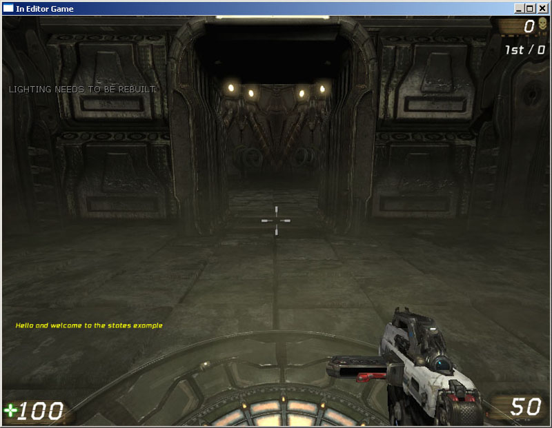
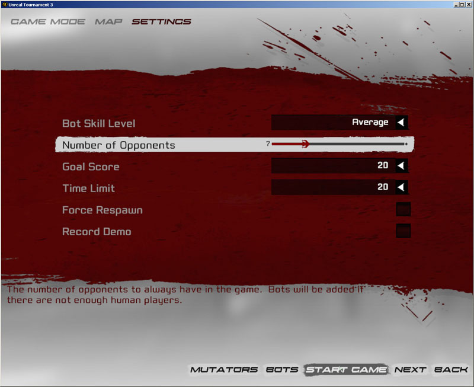

UDN
Search public documentation:
MasteringUnrealScriptStates
日本語訳
中国翻译
한국어
Interested in the Unreal Engine?
Visit the Unreal Technology site.
Looking for jobs and company info?
Check out the Epic games site.
Questions about support via UDN?
Contact the UDN Staff
中国翻译
한국어
Interested in the Unreal Engine?
Visit the Unreal Technology site.
Looking for jobs and company info?
Check out the Epic games site.
Questions about support via UDN?
Contact the UDN Staff
- CHAPTER 11 – STATES
- 11.1 WHAT IS STATE PROGRAMMING
- 11.2 STATES IN UNREAL ENGINE 3
- 11.3 - BASIC STATE TRANSITIONS
- TUTORIAL 11.1 – STATE TRIGGER, PART I: FUNCTION OVERRIDING
- 11.4 - STATE INHERITANCE
- TUTORIAL 11.2 – STATE TRIGGER, PART II: STATE INHERITANCE
- TUTORIAL 11.3 – STATE TRIGGER, PART III: AUTO STATE
- 11.5 - STATE CODE
- 11.6 - STATE STACKING
- 11.7 - STATE-RELATED FUNCTIONS
- TUTORIAL 11.4 – STATE TRIGGER, PART IV: STATE STACKING
- TUTORIAL 11.5 – TURRET, PART I: MU_AUTOTURRET CLASS AND STRUCT DECLARATION
- TUTORIAL 11.6 – TURRET, PART II: CLASS VARIABLE DECLARATIONS
- TUTORIAL 11.7 – TURRET, PART III: EDITABLE VARIABLE DECLARATIONS
- TUTORIAL 11.8 – TURRET, PART IV: DEFAULT PROPERTIES
- TUTORIAL 11.9 – TURRET, PART V: POSTBEGINPLAY() EVENT
- TUTORIAL 11.10 – TURRET, PART VI: ROTATION FUNCTIONS
- TUTORIAL 11.11 – TURRET, PART VII: STATE DECLARATIONS
- TUTORIAL 11.12 – TURRET, PART VIII: GLOBAL TAKEDAMAGE() FUNCTION
- TUTORIAL 11.13 – TURRET, PART IX: GLOBAL TICK() FUNCTION
- TUTORIAL 11.14 – TURRET, PART X: IDLE STATE BODY
- TUTORIAL 11.15 – TURRET, PART XI: ALERT STATE BODY PART I
- TUTORIAL 11.16 – TURRET, PART XII: ALERT STATE BODY PART II
- TUTORIAL 11.17 – TURRET, PART XIII: DEFEND STATE BODY PART I
- TUTORIAL 11.18 – TURRET, PART XIV: DEFEND STATE BODY PART II
- TUTORIAL 11.19 – TURRET, PART XV: DEFEND STATE BODY PART III
- TUTORIAL 11.20 – TURRET, PART XVI: DEAD STATE BODY
- TUTORIAL 11.21 TURRET, PART XVII – COMPILING AND TESTING
- TUTORIAL 11.22 – UTBOT_PELLET CLASS SETUP
- TUTORIAL 11.23 – PELLETCOLLECTING STATE, PART I: FINDNEWGOAL() FUNCTION
- TUTORIAL 11.24 – PELLETCOLLECTING STATE, PART II: HASREACHEDGOAL() FUNCTION
- TUTORIAL 11.25 – PELLETCOLLECTING STATE CODE
- TUTORIAL 11.26 – PELLETHUNTING STATE, PART I: FINDNEWGOAL() FUNCTION
- TUTORIAL 11.27 – PELLETHUNTING STATE, PART II: HASREACHEDGAOL() FUNCTION
- TUTORIAL 11.28 – EXECUTEWHATTODONEXT() AND WANDERORCAMP() FUNCTION OVERRIDES
- TUTORIAL 11.29 – PELLET CLASSES BOT SETUP
- TUTORIAL 11.30 – PELLET BOT COMPILING AND TESTING
- 11.8 - SUMMARY
- SUPPLEMENTAL FILES
CHAPTER 11 – STATES
When programmers set about programming large and complex systems they usually tend to create and model their programs into states. States allow the programmer to focus on the functionality within that state and keep related functionality together. Unlike many other languages, UnrealScript has a mechanism for partitioning your code instead states built right in. This makes it really easy to program functionality like having our character look around randomly if he is in an idle state and not have to worry about that code getting run if he’s in another.11.1 WHAT IS STATE PROGRAMMING
State programming, also referred to as state machine programming, is a way to logically break out the functionality of a program into more manageable pieces. The idea is that by separating out the complex functionality of an entity in to what is referred to as a state, it will make programming the entity easier. A state can be defined in any way you want to; it’s all about making your life easier as the programmer. For example, if we were creating a pong game, we might create the following states to make programming the game easier:- Title Screen
- High Scores Screen
- Game Playing Screen
- Game Paused Screen
- Game Over Screen
Figure 11.1 – State machine diagram for the example pong game. Looking at the diagram, the circle areas are the states and the arrows represent the transitions between the states. In our example above we have a single transition from Title Screen to Game Playing Screen but there is no transition from the Game Playing Screen to the Title Screen as the arrow only travels one direction. In the example above we used states to represent different states in a game, but we can also use states to describe the status of a player or of an AI opponent. An example of some of the states that an AI enemy might could be:
- Searching
- Attacking
- Fleeing
11.2 STATES IN UNREAL ENGINE 3
Unlike many programming languages, UnrealScript provides a built-in way of defining states inside of classes. This makes it possible for each class to have multiple different modes of behavior efficiently and easily. States are declared in a very similar fashion to functions only the State keyword is used in place of the Function keyword. First the State keyword is used followed by the name of the state. Curly braces are then used to contain the code belonging to the new state. Let’s take a look at what a state might look like:
state() GamePlaying
{
function UpdatePaddle()
{
// Handle the user’s input for moving the paddle.
}
}
state() GamePaused
{
function UpdatePaddle()
{
// This should do nothing.
}
}
In the code sample we defined two states: GamePlaying and GamePaused. Inside that state you can see that we have two functions with the same name: UpdatePaddle. Normally it is not allowed to have two functions both with the same name and same argument list. However, this is the beauty of state programming in UnrealScript.
When functions are defined in UnrealScript within state blocks, the Unreal engine determines the state the current object is and only executes the code for that state. This can make our lives a little easier as we don’t need to handle the states within the actual function itself. For example, if we wanted to do this without using UnrealScript’s built-in state mechanism, we’d have to do something like this:
function UpdatePaddle()
{
if (GameState == GamePlaying)
{
// Handle the game playing code.
}
else if (GameState == GamePaused)
{
// Handle the game paused code.
}
}
Now that doesn’t look that bad, but of course I didn’t actually provide any of the implementation details and this example is only using two states. Imagine if you had five states that you could be in and each required some fairly sophisticated implementation details. It then becomes fairly obvious that handling states in the manner above can get pretty confusing, at best.
THE AUTO KEYWORD
The auto state is the state that is initial state of the object. Another way to think about it is that this is the state that the object automatically starts in. The engine automatically calls the SetInitialState() event of all Actors within the world and this event contains the functionality for setting the Actor’s state to whichever state is declared as the auto state. To mark a state as auto, you prefix the state declaration with the auto keyword, like this:
auto state MyState
{
// You state code goes here.
}
THE IGNORES KEYWORD
Sometimes you want to ignore some of the state functions in a state. For example, if an actor is fleeing you might not want to handle and code any of the code to look for a target. We could override the function and leave the function body empty, but that is tedious. Fortunately UnrealScript provides us an easy solution to the problem: the ignores keyword. By simply using an ignore statement beginning with the ignores keyword followed by a list of function to be ignored separated by commas, the actor can be told not to bother executing those functions while in the current state. An example of this can be seen below.
state Fleeing
{
ignores SearchForTarget, SomeOtherFunction;
}
THE SUPER & GLOBAL KEYWORDS
You’ve seen and made use of the Super keyword many times up to this point in order to call a version of an overridden function in the parent class or some specific class up the hierarchy. This keyword works very much the same when used within a function inside of a stat. it will execute the version of that function contained within the same state in the parent class or any class up the hierarchy if specified. If no version of that function can be found in that state in the parent class, the global version of the function in the parent class will be executed instead. If no version of the function exists in the state or globally in the parent class, obviously an error will occur when compiling the scripts. The Global keyword works in a similar fashion, only it allows the version of a function overridden in a state to have its version not within any state called. In other words, the version of a function belonging to the class can be called from within a state which also overrides that function. This can be very useful in promoting code reuse in cases where a general version of a function can be defined in the class and more specific version of that function can be redefined within states belonging to that class, while still making use of the code within the generalized function without having to include that code within the function defined in the state. Take a look at an example of the Global keyword being used:
class StateClass extends Actor;
event Touch()
{
`log(“Someone is near.”);
}
state Damaging
{
event Touch()
{
Global.Touch();
`log(“Let’s damage them!”);
}
}
state Healing
{
event Touch()
{
Global.Touch();
`log(“Let’s heal them!”);
}
}
In the example above, when the actor is not within any state, the global Touch() event gets called resulting in the phrase “Someone is near.” being output to the log file. What happens when the actor is in the Damaging state, though? In this case, the phrase “Someone is near.” is still output because of the use of the Global keyword to call the Touch() event defined in the class. Then the phrase “Let’s damage them!” is output as well. In a similar fashion, when in the Healing state, the phrase “Someone is near.” is output by the global Touch() event and then the phrase “Let’s heal them!” is output by the state’s Touch() event.
Obviously in this particular example, there wasn’t much saved since the entire global Touch() event is only a single line, but it should be evident that the use of the Global keyword could be extremely useful when the global version of a function contains many lines of code that are to be used within one or more states in addition to code specific to each of those states.
Note: The use of the Global keyword results in the most derived version of the global function being executed. This means if the function is not overridden in the current class, the engine looks up the hierarchy until the last time the function was defined within one of the parent classes.
11.3 - BASIC STATE TRANSITIONS
In order for states to be of any real use, there must be a way to transition, or change, from one state to the next. In some cases, transitions also occur within the same state from one label to another. These basic transitions are performed with one of the following functions.GOTOSTATE
GotoState( optional name NewState, optional name Label, optional bool bForceEvents, optional bool bKeepStack )This function changes the state the object is in to the given state and starts executing code at the given LabelName; if no LabelName is given, the Begin label is assumed. If this function is called from the object’s state code, then the state switch happens immediately. If it is called from one of the objects other functions, the switch won’t happen until the execution switches back to the state code. When calling this function causes the actor to transition to a different state than the one the actor is currently in, the BeginState() event of the new state and EndState() event of the current state are always executed. These events are covered in the State Events section below. The bForceEvents parameter specifies whether the BeginState() and EndState() events should be executed even when transitioning to the same state the Actor is already in. The bKeepStack parameter specifies whether the current state stack should be prevented from being cleared or flushed. The state stack will be discussed in greater detail later in the chapter.
GOTO
Goto(‘LabelName’)This function is used to jump to a new label within the state and continue with the state code execution from that point.
Goto()When called with no LabelName parameter, Goto() stops the state code execution. Execution of code is resumed when the state changes or a new label is transitioned to.
STATE EVENTS
State events are events, or functions, that get executed automatically by the engine when transitioning from one state to another, or within the same state in certain circumstances.BEGINSTATE
This event is executed from within the GotoState() function when the NewState parameter of the function is a state other than the current state of the actor or the bForceEvents parameter is True. This event is executed immediately upon transitioning to the new state before any state code is executed.BeginState( Name PreviousStateName )The PreviousStateName parameter holds the name of the state the actor was in previously before the current transition took place. This allows specific actions to be performed based on which state the actor is transitioning from.
ENDSTATE
This event is executed from within the GotoState() function when the NewState parameter of the function is a state other than the current state of the actor or the bForceEvents parameter is True. This event is executed before transitioning to the new state.EndState( Name NewStateName )The NewStateName parameter holds the name of the state the actor is transitioning to after the transition takes place. This allows specific actions to be performed depending on which state the actor is transitioning to.
TUTORIAL 11.1 – STATE TRIGGER, PART I: FUNCTION OVERRIDING
This series of tutorials walks through the creation of a very simple actor that behaves as a trigger. Through the use of states, the behavior of the actor when triggered is changed. This example is meant as a way to demonstrate the purpose and use of states on a very basic level. To begin with, the class is declared and a single state is implemented. 1. Open ConTEXt and create a new file using the UnrealScript highlighter. 2. Declare the new class name MU_StateTrigger extending from the base Actor class. Make this class placeable as well so it can be placed within a map in UnrealEd.class MU_StateTrigger extends Actor placeable;3. This class does not have any variable declarations, but the defaultproperties block is used to give the actor a mesh and collision geometry. There is a lot to add in this block, but we won’t spend much time on it as we are borrowing from the Healer actor created in tutorials found earlier in this book. Create the defaultproperties lock now.
defaultproperties
{
}
For the most part, the defaultproperties block consists of the creation of StaticMeshComponent sub-objects for the visual aspect of the actor and a CylinderComponent sub-object for the collision of the actor. The section below can be copied and pasted from the Healer.uc script.
Begin Object Class=StaticMeshComponent Name=StaticMeshComponent0
StaticMesh=StaticMesh'LT_Deco.SM.Mesh.S_LT_Deco_SM_PodiumScorpion'
Translation=(X=0.000000,Y=0.000000,Z=-40.000000)
Scale3D=(X=0.250000,Y=0.250000,Z=0.125000)
CollideActors=false
bAllowApproximateOcclusion=True
bForceDirectLightMap=True
bCastDynamicShadow=False
LightingChannels=(Dynamic=False,Static=True)
End Object
Components.Add(StaticMeshComponent0)
Begin Object Class=StaticMeshComponent Name=StaticMeshComponent1
StaticMesh=StaticMesh'LT_Deco.SM.Mesh.S_LT_Walls_SM_FlexRing'
Translation=(X=0.000000,Y=0.000000,Z=-40.000000)
Scale3D=(X=0.500000,Y=0.500000,Z=0.500000)
CollideActors=false
bAllowApproximateOcclusion=True
bForceDirectLightMap=True
bCastDynamicShadow=False
LightingChannels=(Dynamic=False,Static=True)
End Object
Components.Add(StaticMeshComponent1)
Begin Object Class=StaticMeshComponent Name=StaticMeshComponent2
StaticMesh=StaticMesh'LT_Light.SM.Mesh.S_LT_Light_SM_LightCone01'
Translation=(X=0.000000,Y=0.000000,Z=-40.000000)
Scale3D=(X=2.000000,Y=2.000000,Z=-1.000000)
CollideActors=false
bAllowApproximateOcclusion=True
bAcceptsLights=False
CastShadow=False
End Object
Components.Add(StaticMeshComponent2)
Begin Object Class=CylinderComponent NAME=CollisionCylinder
CollideActors=true
CollisionRadius=+0040.000000
CollisionHeight=+0040.000000
End Object
CollisionComponent=CollisionCylinder
Components.Add(CollisionCylinder)
bCollideActors=true
bStatic=true
bMovable=False
bEdShouldSnap=True
Figure 11.2 – The subobjects create the state trigger’s visual appearance. 4. The Touch() event is overridden in this class. Initially, the actor will not be within any state and this Touch() event will be called whenever another actor collides with this actor. Declare the Touch() event.
event Touch(Actor Other, PrimitiveComponent OtherComp, vector HitLocation, vector HitNormal)
{
}
The Broadcast() function of the Gameinfo class is used within this event to output a message to the screen when a collision is detected.
WorldInfo.Game.Broadcast(self,"This is the StateTigger class.");In addition, the actor is sent to a new state, the Dialog state which is declared in the next step.
GotoState('Dialog');
5. The Dialog state is the first state declared within the MU_StateTrigger class.
state Dialog
{
}
6. The Touch() event is overridden inside the body of the Dialog state. This will cause this specific version of the Touch() event to be executed when the actor is within the Dialog state and a collision is detected with another actor.
event Touch(Actor Other, PrimitiveComponent OtherComp, vector HitLocation, vector HitNormal)
{
}
As in the earlier declaration of the Touch() event, this version will use the Broadcast() function to output a message to the screen, only this time the message will be different.
WorldInfo.Game.Broadcast(self,"This is the base dialog state's output");7. Save the script in the MasteringUnrealScript\Classes directory with the name MU_StateTrigger.uc and compile the scripts. Fix any syntax errors which may be present. 8. Open UnrealEd and the DM-CH_11_Trigger.ut3 map. This is a simple two-room map that you have seen several times throughout the book.
Figure 11.3 The DM-CH_11_Trigger map 9. Open the Actor Browser and select the MU_StateTrigger class. Right-click in the viewport and choose Add MU_StateTrigger Here to place an instance of the new actor.
Figure 11.4 – The MU_StateTrigger actor is added to the map. 10. Right-click on the floor of one of the rooms and choose Play From Here to test the map. Run over the trigger actor to initiate the Touch() event and observe the message displayed to the screen. It should be the message from the original Touch() event.
Figure 11.5 – The Touch() event message appears. Now run over the trigger actor again. This time the message from the Dialog state’s Touch() event should be displayed instead.
Figure 11.6 – The Dialog state’s Touch() event message is now displayed. This is because the actor is now in the Dialog state and its version of the Touch() event is taking precedence over any other versions present within the class. 11. Save this map with a new name so it can be used in subsequent tutorials. <<<< End of Tutorial >>>>
11.4 - STATE INHERITANCE
Inheritance works just like you’d expect it to for states. When you derive from a class that has a state, you get all of its states, state functions, and labels in your class so you can override them if you’d like or keep the base class’s implementation. Let’s take a look at an example:
class Fish extends Actor;
state Eating
{
function Swim()
{
Log(“Swimming in place while I eat.”);
}
Begin:
Log(“Just a fish in my Eating state.”;
}
class Shark extends Fish;
state Eating
{
function Swim()
{
Log(“Swimming fast to catch up with my food.”);
}
}
class Dolphin extends Fish;
state Eating
{
Begin:
Log(“Just a dolphin in my Eating state.”);
}
In our example above we have a Fish, Shark, and Dolphin class defined. Both the Shark and the Dolphin derive from the Fish class and each override a different portion of the base implementation; the Shark class overrides the Eat function and the Dolphin class overrides the Begin label.
EXTENDING STATES
It is also possible to extend states in the current class, as long as the state is not overriding a state in the derived class. This can be really useful when you have a set of states that all have common functionality. For example, you might have some common state code that happens while an actor is moving but then you want certain functionality to be specific to when the actor is walking versus when the actor is running. Let’s look at an example:
state Moving
{
// Code common to all types of movement.
}
state Running extends Moving
{
// Running specific code.
}
state Walking extends Moving
{
// Walking specific code.
}
TUTORIAL 11.2 – STATE TRIGGER, PART II: STATE INHERITANCE
This tutorial sees the addition of the BeginState() and EndState() events to the Dialog state as well as the creation of the Greeting state which extends the base Dialog state in order to show how state inheritance works. 1. Open ConTEXT and the MU_StateTrigger.uc script. 2. After the Touch() event in the Dialog state’s body, declare the BeginState() event with its one Name parameter called PreviousStateName.
event BeginState(Name PreviousStateName)
{
}
3. Inside the BeginState() event, use the Broadcast() function once again to display a message to the screen. This message will display the last state the actor was in before it was placed into the current state.
WorldInfo.Game.Broadcast(self,"Exiting the"@PreviousStateName@"State");4. Next, declare the EndState() event with its Name parameter NextStateName.
event EndState(Name NextStateName)
{
}
5. A similar call to the Broacast() function is made within this event.
WorldInfo.Game.Broadcast(self,"Entering the"@NextStateName@"State");6. Below the Dialog state, declare a new state named Greeting and extend this new state from the Dialog state.
state Greeting extends Dialog
{
}
This state, without declaring any functions or events in its body, already contains the Touch(), BeginState(), and EndState() events identical to those declared within the Dialog state.
7. The Touch() event is overridden within the Greeting state to output and entirely new message to the screen when a collision is detected while the actor is within this state.
event Touch(Actor Other, PrimitiveComponent OtherComp, vector HitLocation, vector HitNormal)
{
WorldInfo.Game.Broadcast(self,"Hello and welcome to the states example");
}
8. Back in the Touch() event of the Dialog state, add a call to the GotoState() function to place the actor into the Greeting state when that event is executed.
GotoState('Greeting');
9. Save the script and compile the scripts, fixing any errors which are present.
10. Open UnrealEd and the map containing the MU_StateTrigger actor created in the previous tutorial.
Figure 11.7 – The map containing the MU_StateTrigger actor. 11. Right-click on the floor of one of the rooms and choose Play From Here to test the map. Run over the trigger actor to see the original message of the class’s main Touch() event. Notice that the message from the BeginState() event of the Dialog state is displayed as well. Note: Because the actor was not in any state to initially, the sate name referenced by the PreviousStateName parameter of the BeginState() event is None.
Figure 11.8 – Two separate messages are now displayed. 12. Run over the trigger actor once more to cause the Dialog state’s Touch() event to be executed displaying the new message to the screen. You should also notice that the messages from the EndState() event of the Dialog state as well as the BeginState() event of the Greeting state.
Figure 11.9 – All three messages are displayed this time. 13. Finally, run over the trigger actor once more. The message from the Touch() event of the Greeting state should now be displayed on the screen.
Figure 11.10 – The Greeting state’s Touch() event message is displayed. <<<< End of Tutorial >>>>
TUTORIAL 11.3 – STATE TRIGGER, PART III: AUTO STATE
The use of the Auto keyword when declaring a state causes the actor to be placed in that state initially when the match begins. The Dialog state will be set as the MU_StateTrigger’s default state in this tutorial. Also, Two additional states will be added to further drive home the concept of state inheritance, 1. Open ConTEXT and the MU_StateTrigger.uc script. 2. Add the Auto keyword to the declaration of the Dialog state to force the actor into this state when the game begins.
auto state Dialog
{
…
//code removed for brevity
…
}
3. Declare a new state named Inquisitor which extends from Greeting this time.
state Inquisitor extends Greeting
{
}
4. Next declare another new state named Goodbye which extends from the Inquisitor state just declared.
state GoodBye extends Inquisitor
{
}
5. Now, add a call to the GotoState() function in the Touch() event of the Greeting state to place the actor into the Inquisitor state.
GotoState('Inquisitor');
6. Copy the Touch() ebent from the Greeting state and paste it into the Inquisitor state, changing the message in the Broadcast() function call and the state name in the GotoState() function call as shown below.
event Touch(Actor Other, PrimitiveComponent OtherComp, vector HitLocation, vector HitNormal)
{
WorldInfo.Game.Broadcast(self,"Are you learning a great deal about UnrealScript?");
GotoState('Goodbye');
}
7. Paste the Touch() event into the Goodbye state as well and make the changes to the message and state name for this state’s version of the function like so.
event Touch(Actor Other, PrimitiveComponent OtherComp, vector HitLocation, vector HitNormal)
{
WorldInfo.Game.Broadcast(self,"Thanks and have a nice day!");
GotoState('Greeting');
}
8. Save the script and compile the scripts, fixing any errors which are present.
9. Open UnrealEd and the map containing the MU_StateTrigger actor used in the previous tutorial. Right-click on the floor of one of the rooms and choose Play From Here to test the map.
Figure 11.11 – Test the map using the Play From Here functionality. 10. Run over the trigger actor. A message should appear, but this time it should be the message from the Dialog state’s Touch() event instead of the main Touch() event of the class since the actor was placed into the Dialog state by default because of the use of the Auto keyword when declaring that state. Of course, the BeginState() and EndState() messages will also be displayed for the Greeting state and Dialog state, respectively.
Figure 11.12 – The Dialog state’s Touch() event message is displayed initially. 11. Continue running over the trigger to see the rest of the messages. The actor should loop between the Greeting, Inquisitor, and Goodbye states continuously now, showing the messages of each state. <<<< End of Tutorial >>>>
11.5 - STATE CODE
States are essentially made up of two parts: functions and state code. State code is code that gets executed upon a transition of some kind, usually from one state to another, but also within the same state in some cases. This code is not located within any function, but simply within the state itself and following a label of some sort.LABELS
Labels are used to designate a specific location within state code at which to begin executing that code. Labels can have any valid name, usually consisting solely of characters, but when using state code one label is special and that is the “Begin” label. This particular label is the default label used to start the execution of the state code. Take a look at the example below.
auto state MyState
{
function MyFunc()
{
// Does something...
}
Begin:
Log(“MyState’s Begin label is being executed.”);
Sleep(5.0);
goto(‘MyLabel’);
MyLabel:
Log(“MyState’s MyLabel label is being executed.”);
Sleep(5.0);
goto(‘Begin’);
}
LATENT FUNCTIONS
In the above example, as soon as the object gets into MyState, it will start executing the code in the Begin label which will log a message, sleep for five seconds, go to the MyLabel label, log a message, sleep for five seconds, and then start the process all over. This will continue to happen as long as the object is in the MyState state. You might be wondering what is happening while the state is sleeping. That’s a good question because normally the code that is executing is blocking, that is, it must complete all of its execution before any other code can run. Well, there are certain functions in UnrealScript that are called latent functions. Simply put, these functions allow other code to be executed (i.e. code in other states and the rest of the game) but stop the next code in its current execution path from being run. When working with latent functions there are really only a few things you need to remember: 1. The function will return after some amount of time and then your state code will continue to execute 2. Latent functions can only be used within state code 3. You cannot call latent functions from within the body of a functionACTOR LATENT FUNCTIONS
The Actor class contains a couple very general latent functions that can be used in the state code of any class extending from the Actor class.Sleep
This function causes state code to pause execution for a specified amount of time. Once that period of time is up, the state code resumes execution directly after the Sleep() function call.Sleep( float Seconds )Seconds is the number of seconds the state code should pause for.
FinishAnim
This function will cause the execution of state code to pause until the current animation playing on the AnimNodeSequence passed to the function finishes.FinishAnim( AnimNodeSequence SeqNode )The SeqNode parameter is the animation node within the AnimTree associated with the actor that the animation is playing on.
CONTROLLER LATENT FUNCTIONS
The Controller class contains several latent functions mostly pertaining to path finding and navigation.MoveTo
This function causes the Pawn controlled by the Controller to move to a specific location in the world.MoveTo(vector NewDestination, optional Actor ViewFocus, optional bool bShouldWalk = (Pawn != None) ? Pawn.bIsWalking : false)NewDestination is the location within the world the Pawn should move to. ViewFcous is an Actor which the Pawn should face. It’s rotation will be updated to ensure the Pawn always faces the ViewFocus. The bShouldWalk parameter specifies whether the Pawn should walk or run to the new location.
MoveToward
This function is similar to the MoveTo function except this one causes the Pawn being controlled by the Controller to move toward a specific Actor instead of a location.MoveToward(Actor NewTarget, optional Actor ViewFocus, optional float DestinationOffset, optional bool bUseStrafing, optional bool bShouldWalk = (Pawn != None) ? Pawn.bIsWalking : false)NewTarget is the Actor the Pawn should move toward. ViewFcous is an Actor which the Pawn should face. It’s rotation will be updated to ensure the Pawn always faces the ViewFocus. DestinationOffset allows a relative offset to the location of the NewTarget to be specified causing the Pawn to move to a location near the Newtarget, but not the exact location. The bUseStrafing parameter specifies whether the Pawn is allowed to strafe while moving to the new destination. The bShouldWalk parameter specifies whether the Pawn should walk or run to the new location.
FinishRotation
This function pauses the execution of state code until the rotation of the Pawn controlled by the Controller matches the rotation specified by the DesiredRotation property of the Pawn.FinishRotation()
WaitForLanding
This function pauses the execution of state code until the Pawn controlled by the Controller has landed when in the PHYS_Falling physics type.WaitForLanding(optional float waitDuration)The waitDuration parameter is the number of maximum seconds to wait for the Pawn to land. If the Pawn does not land by the time this duration expires, the LongFall() event is executed.
UTBOT LATENT FUNCTIONS
The UTBot class has two latent function which are useful in the creation of new AI behaviors.WaitToSeeEnemy
This function causes the execution of state code to pause until the Pawn being controlled is looking directly at its enemy, but only if the enemy is visible to the Pawn.WaitToSeeEnemy()
LatentWhatToDoNext
This function is used to call the WhatToDoNext() function which contains the decision making functionality of the AI entity. Using the latent version causes the call to be made when the appropriate time has passed, i.e. on the next tick. This keeps the possibility of a race condition from occurring and allows time for the actions of the AI entity to be carried out.LatentWhatToDoNext()
11.6 - STATE STACKING
We’ve already seen that we can use the GotoState function to transition between one state to another. When this happens, the state is changed and there is no way to get back to the previous state and for most circumstances, this is exactly what we want. For example, when changing from an EngagingEnemy to a RunningLikeACoward state, we don’t want to switch back to the previous state. For those times that we do want to be able to stop our current state and jump to another and then come back there are the PushState and the PopState functions.PUSHSTATE & POPSTATE
The PushState function is nearly identical to the GotoState function. When you call it you pass it the state you want to transition to and optionally the label you wish to start execution from. This function gets its name because it places the new state onto the top of the stack pushing the other states down the stack. The PopState function takes no parameters and returns you back to the previously executing state. Let’s take a look at a simple example:
state Looking
{
function Look()
{
PushState(‘Peeking’);
// Do something else interesting...
}
Begin:
PushState(‘Peeking’, ‘Begin’);
// Do yet another interesting thing...
}
state Peeking
{
Begin:
Log(“Nothing to see here.”);
PopState();
}
There are some interesting implementation details you need to be aware of when using PushState:
- When PushState is called from within state code, the call is treated as a latent function. So in the example above, when PushState is called in the Begin label, the code after that call would not execute until the state was popped back to.
- When PushState is called from within a function, the call is not treated as a latent function. So in the example above, when PushState is called from within the Look function, the code after that call would be executed immediately as PushState is only treated as a latent function from within state code.
- You cannot push the same state on the stack multiple times; this will fail.
STATE STACKING EVENTS
These vents are similar to the BeginState() and EndState() events previously discussed, but replace the functionality of those events when using the PushState() and PopState() functions to transition between states. These events, unlike the BeginState() and EndState() events, have no parameters.PUSHEDSTATE
This event is executed immediately within the pushed state when transitioning to a new state by way of the PushState() function.POPPEDSTATE
This event is executed immediately within the popped state when transitioning back to the previous state by way of the PopState() function.PAUSEDSTATE
This event is executed within the state being paused when transitioning to a new state by way of the PuchState() function.CONTINUEDSTATE
This event is executed within the state being continued when transitioning back to the previous state by way of the PopState() function.11.7 - STATE-RELATED FUNCTIONS
In addition to the functions already detailed in this chapter, there are a few other functions that are related to states and are very useful when creating new actors that make use of states.ISINSTATE
This function can be used to determine the currently active state of the actor or if the given state is on the stack.IsInState( name TestState, optional bool bTestStateStack )TestState is the name of the state to check for. If the actor is currently in this state, the function will return a value of True. The bTestStateStack parameter specifies whether or not to check for the given state in the state stack. If True and the state is located within the stack, the function returns a value of True. Here is an example:
state Looking
{
// Something useful...
}
state Staring extends Looking
{
// Something useful...
}
function StartLooking()
{
if (!IsInState(‘Looking’))
{
PushState(‘Looking’);
}
}
The IsInState() function call in the example would return true if the actor was in either the Looking state or the Staring state as the IsInState() function returns true for any state extending from the TestSate. This functionality does not work with inherited states within the stack.
Here is the same example using the stack lookup method:
state Looking
{
// Something useful...
}
state Staring extends Looking
{
// Something useful...
}
function StartLooking()
{
if (!IsInState(‘Looking’, True))
{
PushState(‘Looking’);
}
}
In this example, the IsInState() function would only return true if the Looking state itself appears in the state stack. If only the Staring state appears, a value of False would be returned.
GETSTATENAME
This function returns the name of the currently active state of the actor. This function has no parameters. This function is often used in similar situations to the IsInState() function, only this function does not work with inherited states in any way. Only the name of the actual state the actor is currently in is returned. Here is an example:
state Looking
{
// Something useful...
}
state Staring extends Looking
{
// Something useful...
}
function StartLooking()
{
if (GetStateName() == ‘Looking’)
{
PushState(‘Staring);
}
}
The PushState() function call will only be executed when the actor is in the Looking state.
ISCHILDSTATE
This function is used to determine if one state is extended from another. It returns True if so, and False if not.IsChildState(Name TestState, Name TestParentState)TestState is the name of the child state to check. TestParentState is the name of the parent state to check against.
DUMPSTATESTACK
This function will cause the current state stack to be output to the log for debugging purposes. It is very likely that when creating new classes that make heavy use of states and state stacking, some unwanted or undesirable behavior may occur. This function makes sorting out these kinks and bugs easier.TUTORIAL 11.4 – STATE TRIGGER, PART IV: STATE STACKING
The ability of states to be stacked using the PushState() and PopState() functions is new in Unreal Engine 3 and UT3. In this tutorial, the state trigger actor uses these functions to navigate between the Greeting and Inquisitor states showing the difference between this method and the GotoState() function call. 1. Open ConTEXT and the M_StateTrigger.uc script. 2. In the Greeting state, comment out the GotoState() function call and replace it with a call to the PushState() function passig it the same Inquisitor state.
//GotoState('Inquisitor');
PushState('Inquisitor');
3. Then in the Inquisitor state, comment out the GotoState() function call and replace it with a simple PopState() function call.
//GotoState(‘Goodbye’); PopState();4. Save the script and compile the scripts, fixing any errors which are present. 5. Open UnrealEd and the map containing the MU_StateTrigger actor used in the previous tutorial.
a. Right-click on the floor of one of the rooms and choose Play From Here to test the map.
b. Run over the trigger actor to display the Dialog state’s messages and send the actor into the Greeting state.
Figure 11.13 – The Dialog state’s Touch() and EndState() event messages and the Greeting state’s BeginState() event message are displayed.
c. Run back over the actor and notice that only the message from the Touch() event was displayed. The BeginState() and EndState() events of the Inquisitor and Greeting states, respectively, were ignored. Only the GotoState() function causes these events to be executed.
Figure 11.14 – Only the message from the Touch() event of the Greeting state is displayed.
d. Run over the actor again to display the Inquisitor state’s Touch() event message.
Figure 11.15 – The Touch() event message from the Inquisitor state is now displayed.
e. Finally, run over the actor one more time. Notice that the PopState() function call in the Touch() event of the Inquisitor state placed the actor back into the Greeting state causing the greeting message to be displayed once again.
Figure 11.16 – The message from the Greeting state is displayed once again. 6. Obviously, the BeginState() and EndState() events won’t work now that the class is using stacking. In order to get events to specify which state is being pushed or pop in a similar fashion to before, the state stacking events are used instead. Begin by declaring the PushedState() event in the Dialog state.
event PushedState()
{
}
Inside this function, place the same line of code used to output the message in the BeginState() event, only use the GetStateName() function to get the appropriate name of the state instead of the PreeviousStateParameter. Also, change the word “Exiting” to read “Pushing”.
WorldInfo.Game.Broadcast(self,"Pushing the"@GetStateName()@"State");Copy and paste the entire event declaration 3 times changing the names of the new declarations to PoppedState, PausedState, and ContinuedState. Then change the word “Pushing” to read “Popping”, Pausing”, and “Continuing”, respectively.
event PoppedState()
{
WorldInfo.Game.Broadcast(self,"Popping the"@GetStateName()@"State");
}
event PausedState()
{
WorldInfo.Game.Broadcast(self,"Pausing the"@GetStateName()@"State");
}
event ContinuedState()
{
WorldInfo.Game.Broadcast(self,"Continuing the"@GetStateName()@"State");
}
7. Save the script and compile the scripts again, fixing any errors which may be present.
8. Open UnrealEd and the map saved previously with the state trigger actor in it.
a. Right-click on the floor of one of the rooms and choose Play From Here to test the map.
b. Run over the trigger actor to display the Dialog state’s messages and send the actor into the Greeting state.
Figure 11.17 – The Dialog state’s Touch() and EndState() event messages and the Greeting state’s BeginState() event message are displayed.
c. Run back over the actor and notice that the messages from the PausedState() and PushedState() events are now displayed because of the use of the PushState() function.
Figure 11.18 – The PausedState() and PushedState() messages are displayed in addition to the Touch() message.
d. Run over the actor again to pop the Inquisitor state. The PoppedState() and ContinuedState() events should now be displayed because of the PopState() function call.
Figure 11.19 – The PoppedState() and ContinuedState() messages are now displayed with the Touch() message. This short series of tutorials was simply meant to provide a basic understanding of what states are and how they work, including the various methods of transitioning between them. In subsequent tutorials, states will be used in more complex examples to give you a better feel for just how states can be used within UT3 to create interesting new items to be used in the game. <<<< End of Tutorial >>>>
TUTORIAL 11.5 – TURRET, PART I: MU_AUTOTURRET CLASS AND STRUCT DECLARATION
With the basics of using states out of the way, you will now embark on the creation of a new placeable sentry turret that auto-targets any visible enemies. This class is an extension of the Pawn class which will provide the visual aspect of the actor and use states to differentiate behavior based on factors in its environment. There is quite a bit of initial setup to be performed before we get into the states of the turret so we will get that out of the way first. 1. Open ConTEXT and create a new file using the UnrealScript highlighter. 2. To begin with, declare the new pawn class called MU_AutoTurret and extend it from the base Pawn class. Also, hide the AI, Camera, Debug, Pawn, and Physics categories so they do not show up in the Properties window inside of UnrealEd and make the class placeable.class MU_AutoTurret extends Pawn HideCategories(AI,Camera,Debug,Pawn,Physics) placeable;3. This classes uses several structs that need to be defined before we move on to declaring variables. First, a new RotationRange struct is created which consists of two Rotators representing a minimum and maximum rotation around each of the axes: Pitch, Yaw, and Roll. Also, three Bool variables specifying whether to use the limits for each axis of rotation are declared.
//Min and Max Rotators Struct - limiting turret rotation
struct RotationRange
{
var() Rotator RotLimitMin;
var() Rotator RotLimitMax;
var() Bool bLimitPitch;
var() Bool bLimitYaw;
var() Bool bLimitRoll;
structdefaultproperties
{
RotLimitMin=(Pitch=-65536,Yaw=-65536,Roll=-65536)
RotLimitMax=(Pitch=65536,Yaw=65536,Roll=65536)
}
};
Note: default values for each Rotator have been defined using a structdefaultproperties block.
Figure 11.20 – On the right, the rotation is not limited, on the left limits have been put into place. 4. The next struct named TurretSoundGroup containing references to several SoundCues is defined. These SoundCue references are used to determine which sounds will play under certain circumstances.
// Sounds for turret behaviors
struct TurretSoundGroup
{
var() SoundCue FireSound;
var() SoundCue DamageSound;
var() SoundCue SpinUpSound;
var() SoundCue WakeSound;
var() SoundCue SleepSound;
var() SoundCue DeathSound;
};
5. The turret needs a few special effects such as a muzzle flash, damage effects and a destruction effect which require references to the ParticleSystems to use for these effects. A struct named TurretEmitterGroup holds these references. Some other properties are present in this struct as well: a Float determining the amount of time to show the muzzle flash effect for, the Name of the parameter within the damage effect’s particle system that allows control of the spawn rate of the particles, and a Bool to specify whether the damage effect continues after the destruction of the turret.
//PSystems for the turret
struct TurretEmitterGroup
{
var() ParticleSystem DamageEmitter;
var() ParticleSystem MuzzleFlashEmitter;
var() ParticleSystem DestroyEmitter;
var() Float MuzzleFlashDuration;
var() Name DamageEmitterParamName;
var() Bool bStopDamageEmitterOnDeath;
structdefaultproperties
{
MuzzleFlashDuration=0.33
}
};
Note the default value set to 0.33 for the MuzzleFlashDuration property. This should be a good starting value for most muzzle flashes.
6. Another struct named TurretBoneGroup provides references to three socket names and the name of a skeletal controller. The socket names reference sockets to be used as locators for any particle effects and for the spawning of the projectiles the turret fires. The name of the skeletal controller is used to manipulate the SkelControlSingleBone in the AnimTree assigned to the turret to control the turrets rotation.
//Bone, Socket, Controller names
struct TurretBoneGroup
{
var() Name DestroySocket;
var() Name DamageSocket;
var() Name FireSocket;
var() Name PivotControllerName;
};
7. The final struct named TurretRotationGroup contains three Rotators to specify the pose the turret should be placed in when idle, alert, or destroyed. The rotation of the turret is interpolated from its current orientation to one of these three rotations depending on the situation. This struct also contains a Bool specifying whether to use a predefined pose when the turret is destroyed or a randomly calculated pose.
//Rotators defining turret poses
struct TurretRotationGroup
{
var() Rotator IdleRotation;
var() Rotator AlertRotation;
var() Rotator DeathRotation;
var() Bool bRandomDeath;
};
Figure 11.21 – Rotations are used to create poses for the turret mesh. 8. Save the script in the MasteringUnrealScript/Classes directory with the name MU_AutoTurret.uc to match the class name. <<<< End of Tutorial >>>>
TUTORIAL 11.6 – TURRET, PART II: CLASS VARIABLE DECLARATIONS
With the structs needed for the MU_AutoTurret class now declared, the class variables can be declared. These variables are separated into two groups. The first group is made up of variables which are solely used by the code within the class and not available to the designer in UnrealEd. The second group will be properties that the designer can use to customize the look and behavior of the turret within UnrealEd. This tutorial covers the declarations of the first group of non-editable variables. 1. Open ConTEXT and the MU_AutoTurret.uc script. 2. The turret needs to know what to shoot at in order to track it and fire. This target is a Pawn and two separate references will be kept to the turret’s target. One reference will be the current target the turret was tracking during the last tick and the other is a reference to the new target the turret should track during the current tick. The two references are necessary so that we can tell when the target has changed from one tick to the next.var Pawn EnemyTarget; //The new enemy the turret should target this tick var Pawn LastEnemyTarget; //The enemy the turret was targeting last tick3. The turret must also keep track of the direction from the turret to the target in order to know when the player has moved. As with the target, two references will be kept to hold the direction vector during this tick as well as the direction vector from the previous tick.
var Vector EnemyDir; //Vector from the turret's base to the enemy's location this tick var Vector LastEnemyDir; //Vector from the turret's base to the enemy's location last tick
Figure 11.22 – As the target moves, the EnemyDir and LastEnemyDir update. 4. In order to interpolate the rotation of the turret from its current orientation to face the target, several pieces of information are necessary. These are listed below.
- The beginning rotation of the turret’s pivot bone
- The desired rotation of the turret’s pivot bone
- The total time necessary to perform the rotation (based on the rotation rate to be declared later)
- The amount of time elapsed since the interpolation began
- The alpha value (0.0 to 1.0) of the interpolation
var float TotalInterpTime; //Total time to interpolate rotation var Float ElapsedTime; //Time spent in the current interpolation var Float RotationAlpha; //Curret alpha for interpolating to a new rotation var Rotator StartRotation; //Beginning rotation for interpolating var Rotator TargetRotation; //Desired rotations for interpolating5. To cause the projectiles fired from the turret to spawn in the correct location and orientation, two variables are used to hold the location and rotation in world space of the socket located at the tip of the barrel of the turret.
var Vector FireLocation; //World position of the firing socket var Rotator FireRotation; //World orientation of the firing socket
Figure 11.23 – An example FireLocation and FireRotation. 6. The rotation of the turret is based on a pivot bone, but the rotation of this bone is not controlled directly. Instead, a SkelControlSingleBone is linked to the pivot bone in the AnimTree assigned to the turret and the skeletal controller is manipulated to control the rotation of the turret. Of course, this means a reference to this skeletal controller is needed.
var SkelControlSingleBone PivotController; //The skelcontrol in the AnimTree7. Two Bool variables hold the current status of the turret. The first named bCanFire determines whether the turret is in a state where it can fire projectiles at the target. The other named bDestroyed determines whether the turret has been destroyed and should no longer target enemies.
var Bool bCanFire; //Is the turret in a firing state? var Bool bDestroyed; //Has the turret been destroyed?8. As you will see in the next tutorial, the health of the turret is configurable within UnrealEd by the designer. A separate variable will hold the beginning value of that property in order to have a reference to the maximum health the turret can have.
var Int MaxTurretHealth; //Max health for this turret9. A float variable named FullRevTime holds the amount of seconds necessary for the turret to make a full revolution while rotating at its minimum rotation rate as specified by a property that will show up in the next tutorial, MinTurretRotRate.
var Float FullRevTime; //Seconds to make full rev at min rot rate10. A Float variable named GElapsedTime holds the amount of time that has passed since the last enemy locating update performed in the classes global Tick() function. The G prefix is simply to indicate this is to be used in the global Tick() function instead of any state Tick() functions.
var Float GElapsedTime; //Elapsed time since last global tick11. An Int named OrigMinRotRate holds a reference to the initial value when the match begins of one of the editable variables, MinTurretRotRate, that is declared in the following tutorial.
var Int OrigMinRotRate; //Beginning value of MinTurretRotRate12. The last few variables in this group are references to the ParticleSystemComponents that display the damage, muzzle flash, and destruction effects.
var ParticleSystemComponent DamageEffect; //PSys component for damage effects var ParticleSystemComponent MuzzleFlashEffect; //PSys component for muzzle flashes var ParticleSystemComponent DestroyEffect; //PSys component for destruction effects
Figure 11.24 – Examples of a muzzle flash, damage, and destruction effect. 13. Save the script to preserve your progress. <<<< End of Tutorial >>>>
TUTORIAL 11.7 – TURRET, PART III: EDITABLE VARIABLE DECLARATIONS
The second group of variables belonging to the MU_AutoTuret class consists of the properties that are configurable by the designer inside of the Unreal Editor. This section contains variables making use of the structs declared previously and enables the turret class to be very flexible by allowing the designer to customize the look and behavior of the turret without the need to alter the code in any way. All of the variables declared in this tutorial will be declared as editable and placed within the Turret category. 1. Open ConTEXT and the MU_AutoTurret.uc script. 2. You may have noticed the references to sockets and skeletal controllers in previous tutorials which may have led you to the conclusion that the turret uses a skeletal mesh as its display component. Pawns do already have a SkeletalMeshComponent reference, but the turret class declares its own to be displayed within the Turret category. In addition to a SkeletalMeshComponent for display purposes, a DynamicLightEnvironmentComponent is used for lighting the mesh more efficiently. A secondary skeletal mesh is also specified to be swapped with the default mesh when the turret is destroyed.var(Turret) SkeletalMeshComponent TurretMesh; //SkelMeshComp for the turret var(Turret) DynamicLightEnvironmentComponent LightEnvironment; //For efficient lighting var(Turret) SkeletalMesh DestroyedMesh; //destroyed SkelMesh3. A single instance of the TurretBoneGroup struct defined earlier is needed to provide the names of the sockets and skeletal controller needed to control the turret’s rotation and attach effects to.
var(Turret) TurretBoneGroup TurretBones; // Socket, Controller names4. In addition to an instance of the TurretRotationGroup struct to set poses for the turret, an instance of the RotationRange is used to set limits for rotations round each axis as well as two Int variables to set the minimum and maximum rotation rate the turret can achieve are necessary.
var(Turret) TurretRotationGroup TurretRotations; //Rotations defining turret poses var(Turret) RotationRange RotLimit; //Rotation limits for turret var(Turret) Int MinTurretRotRate; //Min Rotation speed Rot/Second var(Turret) Int MaxTurretRotRate; //Max Rotation speed Rot/Second5. The turret shoots projectiles and needs to know which class of projectile to shoot. Also, the speed at which to shoot the projectiles is specified as the number of rounds to shoot each second. In order to give a more realistic representation of an actual turret, some variation in the aim of the turret is introduced.
var(Turret) class<Projectile> ProjClass; //Type of projectile the turret fires var(Turret) Int RoundsPerSec; //Number of rounds to fire per second var(Turret) Int AimRotError; //Maximum units of error in turret aiming
Figure 11.25 – The same turret with varying RoundsPerSecond values. 6. An instance of the TurretEmitterGroup struct provides references to particle systems to use for the damage, destruction, and muzzle flash effects.
var(Turret) TurretEmitterGroup TurretEmitters; //PSystems used by the turret7. Sounds for the turret are referenced within an instance of the TurretSoundGroup struct.
var(Turret) TurretSoundGroup TurretSounds; //Sounds used for turret behaviors8. While Pawns have a Health property, the turret uses its own TurretHealth property to keep all properties contained within the Turret group.
var(Turret) Int TurretHealth; //Initial amount of health for the turret9. Save the script to preserve your work. <<<< End of Tutorial >>>>
TUTORIAL 11.8 – TURRET, PART IV: DEFAULT PROPERTIES
For the final part of the MU_AutoTurret class setup, sub-objects need to be created for the components used by the turret. Also in the default properties block, default values must be set for the properties of the struct instances and various other individual properties declared in the previous tutorial. 1. Open ConTEXT and the MU_AutoTurret.uc script. 2. Create the defaultproperties block
defaultproperties
{
}
3. The DynamicLightEnvirnmentComponent is fairly simple to create since it has no properties which need be set. All the defaults will suffice. It is assigned to the LightEnvironment variable and added to the Components array.
Begin Object Class=DynamicLightEnvironmentComponent Name=MyLightEnvironment End Object LightEnvironment=MyLightEnvironment Components.Add(MyLightEnvironment)4. The SkeletalMeshComponent needs to be created, added to the Components array and assigned to the TurretMesh variable of this class as well as the Mesh variable inherited from the Pawn class. In addition, the SkeletalMesh, AnimTreeTemplate, PhysicsAsset, and LightEnvirnment properties of the component are set.
Begin Object class=SkeletalMeshComponent name=SkelMeshComp0 SkeletalMesh=SkeletalMesh'TurretContent.TurretMesh' AnimTreeTemplate=AnimTree'TurretContent.TurretAnimTree' PhysicsAsset=PhysicsAsset'TurretContent.TurretMesh_Physics' LightEnvironment=MyLightEnvironment End Object Components.Add(SkelMeshComp0) TurretMesh=SkelMeshComp0 Mesh=SkelMeshComp0The assets assigned to the Skeletalmesh, AnimTreeTemplate, and PhysicsAsset are located in the TurretContent package provided with the files for this chapter on the DVD. These are only the defaults and can be replaced with your own assets when placing a turret actor inside of the Unreal Editor to customize the turret.
Figure 11.26 – The TurretMesh skeletal mesh from the TurretContent package. 5. The ParticleSystemComponent subobjects for the MuzzleFlashEffect, DestroyEffect, and DamageEffect are all very similar and can be done all at once. The only deviation is with the DamageEffect’s component where the SecondsBeforeInactive property will be set to a fairly high value of 10000.0, instead of a value of 1.0 like the other two componenets, to ensure the ParticleSystem continues playing at all times.
Begin Object Class=ParticleSystemComponent Name=ParticleSystemComponent0 SecondsBeforeInactive=1 End Object MuzzleFlashEffect=ParticleSystemComponent0 Components.Add(ParticleSystemComponent0) Begin Object Class=ParticleSystemComponent Name=ParticleSystemComponent1 SecondsBeforeInactive=1 End Object DestroyedEffect=ParticleSystemComponent1 Components.Add(ParticleSystemComponent1) Begin Object Class=ParticleSystemComponent Name=ParticleSystemComponent2 SecondsBeforeInactive=10000.0 End Object DamageEffect=ParticleSystemComponent2 Components.Add(ParticleSystemComponent2)6. The values of properties located within the TurretBones struct are set based on the default SkeletalMesh and Animtree. These can be overridden within the editor when using a different mesh or AnimTree.
TurretBones={(
DestroySocket=DamageLocation,
DamageSocket=DamageLocation,
FireSocket=FireLocation,
PivotControllerName=PivotController
)}
7. Again with the TurretSounds struct, default sounds from the UT3 assets are assigned to each of the properties in the struct.
TurretSounds={(
FireSound=SoundCue'A_Weapon_Link.Cue.A_Weapon_Link_FireCue',
DamageSound=SoundCue'A_Weapon_Stinger.Weapons.A_Weapon_Stinger_FireImpactCue',
SpinUpSound=SoundCue'A_Vehicle_Turret.Cue.AxonTurret_PowerUpCue',
WakeSound=SoundCue'A_Vehicle_Turret.Cue.A_Turret_TrackStart01Cue',
SleepSound=SoundCue'A_Vehicle_Turret.Cue.A_Turret_TrackStop01Cue',
DeathSound=SoundCue'A_Vehicle_Turret.Cue.AxonTurret_PowerDownCue'
)}
8. One custom and two stock ParticleSystems along with the name of the parameter controlling the spawn rate within the damage emitter are assigned to the properties of the TurretEmitter struct.
TurretEmitters={(
DamageEmitter=ParticleSystem'TurretContent.P_TurretDamage',
MuzzleFlashEmitter=ParticleSystem'WP_Stinger.Particles.P_Stinger_3P_MF_Alt_Fire',
DestroyEmitter=ParticleSystem'FX_VehicleExplosions.Effects.P_FX_VehicleDeathExplosion',
DamageEmitterParamName=DamageParticles
)}
Figure 11.27 – The damage, muzzle flash, and destruction effect particle systems. 9. Each of the rotations contained within the TurretRotations struct can be set with default values for posing the default mesh.
TurretRotations={(
IdleRotation=(Pitch=-8192,Yaw=0,Roll=0),
AlertRotation=(Pitch=0,Yaw=0,Roll=0),
DeathRotation=(Pitch=8192,Yaw=4551,Roll=10922)
)}
Figure 11.28 – The TurretMesh assuming the Idle, Alert, and Death poses. 10. Finally, the various other properties such as the rotation rate, firing rate, health, projectile class, aim error are all given default values. In addition one inherited property is set here as well: bEdShouldSnap. This variable is given a value of True to make the turret snap to the grid when placing instances of it inside of UnrealEd.
TurretRotRate=128000 TurretHealth=500 AimRotError=128 ProjClass=class'UTGame.UTProj_LinkPowerPlasma' RoundsPerSec=3 bEdShouldSnap=true11. Save the script to preserve your progress. <<<< End of Tutorial >>>>
TUTORIAL 11.9 – TURRET, PART V: POSTBEGINPLAY() EVENT
Back in the MU_AutoTurret class, the PostBeginPlay() event will be overridden and used to create the controller and initialize the turret. 1. OpenConTEXT and the MU_AutoTurret.uc scrpt. 2. Declare the PostBeingPlay() event so it can be overridden in the turret class.
event PostBeginPlay()
{
}
3. Call the AIController class’s PostBeginPlay() to make sure any basic initialization present in the parent classes is performed.
Super.PostBeginPlay();4. The MaxTurretHealth property is set to the beginning value of the TurretHealth property. This is used later to determine the percentage of damage done to the turret at any given time. Also, the value of OrigMinRotRate is initialized to the value of MinTurretRotRate and the FullRevTime is calculated by dividing one full revolution of rotator units by the MinTurretRotaRate..
MaxTurretHealth = TurretHealth; OrigMinRotRate = MinTurretRotRate; FullRevTime = 65536.0 / Float(MinTurretRotRate);5. To initialize the PivotController variable, we need to find a reference to the SkelControlSingleBone skeletal controller located within the AnimTree assigned to the SkeletalMeshComponent. Passing the TurretBones.PivotControllerName value to the component’s FindSkelControl() function and casting the result to a SkelControlSingleBone accomplishes this.
PivotController=SkelControlSingleBone(Mesh.FindSkelControl(TurretBones.PivotControllerName));Note: The code is using the Mesh variable to reference the SkeletalMeshComponenet even though we declared the TurretMesh variable in this class. If you’ll remember, the SkeletalMeshComponent was assigned to both of these variables in the default properties so they both reference the same component. The Mesh variable was chosen to be used in the code as it is shorter and means less typing. 6. Next, the FireLocation and FireRotation variables are initialized by passing them along with the TurretBones.FireSocket value to the SkeletalMeshComponent’s GetSocketWorldLocationAndRotation() function.
Mesh.GetSocketWorldLocationAndRotation(TurretBones.FireSocket,FireLocation,FireRotation);The second and third parameters of this function are declared using the Out specifier, which as you know means that the function sets the values of these variables that are passed into the function. 7. The ParticleSystems specified in the TurretEmitters struct are assigned as the templates for the three ParticleSystemComponents for the damage, destroy, and muzzle flash effects.
DamageEffect.SetTemplate(TurretEmitters.DamageEmitter); MuzzleFlashEffect.SetTemplate(TurretEmitters.MuzzleFlashEmitter); DestroyEffect.SetTemplate(TurretEmitters.DestroyEmitter);8. The three ParticleSystemComponents are attached to the appropriate sockets of the SkeletalMeshComponent using the AttachComponentToSocket() function of the SkeletalMeshComponent
Mesh.AttachComponentToSocket(DamageEffect, TurretBones.DamageSocket); Mesh.AttachComponentToSocket(MuzzleFlashEffect, TurretBones.FireSocket); Mesh.AttachComponentToSocket(DestroyEffect, TurretBones.DestroySocket);
Figure 11.29 – The particle systems attached to the locations of the sockets in the skeletal mesh. 9. Finally, the Physics of the turret is set to PHYS_None so no physics is applied to the turret.
SetPhysics(PHYS_None);10. Save the script to preserve your work. <<<< End of Tutorial >>>>
TUTORIAL 11.10 – TURRET, PART VI: ROTATION FUNCTIONS
At various spoints in the turret script, the turret needs to be able to rotate to a given rotation in order to assume the poses set in the Idle, Alert, and Death rotations. To make this rotation look smooth and realistic, an interpolation is used instead of directly setting the rotation causing a snapping effect. Two functions are involved in this process. One function sets up all the necessary properties and set a looping timer, while the other calculates the interpolated rotation and adjusts the skeletal controller accordingly. 1. Open ConTEXT and the MU_AutoTurret.uc script. 2. The first function to be added is named DoRotation() and has a single Rotator parameter named NewRotation.
function DoRotation(Rotator NewRotation, Float InterpTime)
{
}
3. The second function, a timer function, is named RotateTimer() and has no parameters.
function RotateTimer()
{
}
4. First the DoRotation() function initializes the StartRotation, TargetRotation, and RotationAlpha properties of the turret class.
StartRotation = PivotController.BoneRotation; TargetRotation = NewRotation; RotationAlpha = 0.0; TotalInterpTime = InterpTime;As you can see, the StartRotation is set to the current rotation of the turret specified by the BoneRotation property of the skeletal controller in the AnimTree. The TargetRotation is set to the NewwRotation passed to the function. Then, the RotationAlpha is reset to 0.0 to begin the new interpolation and the TotalInterpTime is set to the duration passed into the function. 5. Once the values have been initialized, a looping timer is set to call the RotateTimer() function every 0.033 seconds, or 30 times a second.
SetTimer(0.033,true,'RotateTimer');6. Inside the RotateTimer() function, the RotationAlpha is incremented by the same value as the rate of the timer, 0.033.
RotationAlpha += 0.033;7. If the RotationAlpha is less than or equal to TotalInterpTime, the interpolation is calculated and the BoneRotation property is set with the new rotation.
if(RotationAlpha <= TotalInterpTime) PivotController.BoneRotation = RLerp(StartRotation,TargetRotation,RotationAlpha,true);The RLerp() function defined in the Object class performs the interpolation calculation based on the beginning rotation, ending rotation, and current alpha values passed to the function. The final parameter, a Bool, specifies whether to use the shortest distance to interpolate from the beginning rotation to the ending rotation.
Figure 11.30 – Updating the BoneRotation of the skeletal controller rotates the turret. 8. Otherwise, if the RotationAlpha value is greater than 1.0, signifying the interpolation has finished, the timer is cleared.
else
ClearTimer('RotateTimer');
9. Save the script to preserve your progress.
<<<< End of Tutorial >>>>
TUTORIAL 11.11 – TURRET, PART VII: STATE DECLARATIONS
The turret class consists of four states defining the four different behaviors the turret can assume. At this point, the states are declared as skeleton states, or placeholders, simply to give you an idea of what exists. The bodies of these states will be filled out in subsequent tutorials. 1. Open ConTEXT and the MU_AutoTurret.uc script. 2. The first state declared is the Idle state. This is the default initial state of the turret. Its function is fairly self-explanatory: it causes the turret to idle or stand by waiting for some outside event to occur which forces the turret into some other state to take the appropriate action.
auto state Idle
{
}
Notice the use of the Auto specifier in the state’s declaration forcing the turret into this state when the game begins.
3. The next state declared in the turret class is the Alert state. This state represents an increase in alertness over the idle state, where the turret is actively searching for any visible enemy to target and attack.
state Alert
{
}
4. The next state declared in the class is the Defend state. Once an enemy has been found, the Defend state is entered. This state handles targeting the enemy and firing projectiles.
state Defend
{
}
5. The final state declared in the turret class is the Dead state. This is also the final state for the turret which it only enters after its health has reached 0. This state handles all the destruction effects and ceases all other functionality such as searching for, targeting, or firing at enemies.
state Dead
{
}
6. Save the script to preserve your progress.
<<<< End of Tutorial >>>>
TUTORIAL 11.12 – TURRET, PART VIII: GLOBAL TAKEDAMAGE() FUNCTION
The turret we are creating is able to be damaged and even destroyed by the players in the game. In order to handle this damaging ability, the TakeDamage() function inherited from the parent class will be overridden. This tutorial will cover the setup of this TakeDamage() function. 1. Open ConTEXT and the MU_AutoTurret.uc script. 2. The TakeDamage() event is inherited and is overridden in the turret class to enable the turret to handle playing its damage effects and sounds as well as making use of its TurretHealth variable in place of the inherited Health variable. Declare this event to allow it to be overridden.
event TakeDamage(int Damage,
Controller InstigatedBy,
vector HitLocation,
vector Momentum,
class<DamageType> DamageType,
optional TraceHitInfo HitInfo,
optional Actor DamageCauser )
{
}
3. First, the TurretHealth property is adjusted by subtracting the value passed in as the Damage parameter.
TurretHealth -= Damage;4. Next, a check is performed to determine if the DamageEmitter exists and then sets the value of the spawn rate parameter of the DamageEffect accordingly using the SetFloatParam() function of the ParticleSystemComponent.
if(TurretEmitters.DamageEmitter != None)
{
DamageEffect.SetFloatParameter(TurretEmitters.DamageEmitterParamName,FClamp(1-Float(TurretHealth)/Float(MaxTurretHealth)),0.0,1.0));
}
The majority of the code above should be fairly self-explanatory. The parameter name is passed to the SetFloatParameter() function as the first parameter and the value to be assigned to that parameter is passed as the second parameter. The parameter in the particle system is expecting a value between 0.0 and 1.0 representing the relative amount of damage done to the turret. This value is mapped to a new range which determines the amount of particles to spawn each second.
FClamp(1-Float(TurretHealth)/Float(MaxTurretHealth)),0.0,1.0)This value is calculated by dividing the current health value by the initial maximum health value to get a percentage of the turret’s health remaining. That result is then subtracted from 1.0 to get the inverse percentage, or the percentage of damage done. This is then clamped between 0.0 and 1.0 for good measure.

Figure 11.31 – As the turret is damaged, the damage emitter spawns more particles. 5. Any sound meant to be played when the turret is damaged is played using the PlaySound() function after the damage effect is adjusted.
if(TurretSounds.DamageSound != None) PlaySound(TurretSounds.DamageSound);6. As a defense mechanism, any Pawn who shoots at and damages the turret becomes the turret’s enemy and is targeted. The InstigatedBy parameter is a controller so its Pawn, if one exists, will become the new EnemyTarget of the turret.
if(InstigatedBy.Pawn != None) EnemyTarget = InstigatedBy.Pawn;
Figure 11.32 – The Pawn which damages the turret becomes the new EnemyTarget. 7. Finally, the turret is sent to the Dead state if its health has been exhausted.
if(TurretHealth <= 0)
{
GotoState('Dead');
}
8. Save the script to preserve your work. We will return briefly to this function in a subsequent tutorial.
TUTORIAL 11.13 – TURRET, PART IX: GLOBAL TICK() FUNCTION
The turret class’s global Tick() function is responsible for finding visible enemies for the turret to target and attack. This function exists outside of any state and is used when the turret is in the Alert or Defend states. 1. Open ConTEXT and the MU_AutoTurret.uc script. 2. Declare the Tick() function following the states declared in the previous chapter, making sure it is not inside the bodies of any of those states.
function Tick(Float Delta)
{
}
3. The Tick() function’s main responsibility is to pick a new enemy for the turret by finding the player that is closest to the current aim of the turret. This will require calculating the dot product of the direction the turret is aiming and the direction to the player in question and comparing the result to that of each subsequent player. Two local Float variables ware used to store the current dot product and the current closest dot product.
local Float currDot; local Float thisDot;An iterator is used to loop through all the players in the match. This requires a UTPawn local variable to hold a reference to each player in the iterator.
local UTPawn P;Finally, a local Bool is used to specify whether a new enemy was found and set as the target enabling the code to choose which state to place the turret into.
local Bool bHasTarget;The result of each dot product operation is between -1 and 1. -1 being in the exact opposite direction to where the turret is aiming and 1 being directly in the turret’s aim. The currDot is initialized to a value of -1.01 so that the result of the dot product for any player found will be higher than the initial value.
currDot = -1.01;4. An If/Else-statement is used to cause the targeting to only be performed once every 0.5 seconds and only if the turret has not been destroyed.
if(GElapsedTime > 0.5 && !bDestroyed)
{
}
else
{
}
Inside the If block, the values of GElapsedTime and bHasTarget are reset.
GElapsedTime = 0.0; bHasTarget = false;In the Else block, the value of GElapsedTime is incremented by the time passed since the last Tick() function call.
GElapsedTime += Delta;The If/Else-statement now looks like so:
if(GElapsedTime > 0.5 && !bDestroyed)
{
GElapsedTime = 0.0;
bHasTarget = false;
}
else
{
GElapsedTime += Delta;
}
5. Back in the If Block, the AllPawns iterator function is used to loop through all the UTPawns within the match currently.
foreach WorldInfo.AllPawns(class'UTGame.UTPawn',P)
{
}
6. As the condition to an If-statement within the iterator, a simple trace is performed to determine if the turret has line of sight to the current pawn using the FastTrace() function available to all Actors. This function returns True is no world geometry was encountered when tracing to the end location from the start location.
if(FastTrace(P.Location,FireLocation))
{
}
Figure 11.33 – Only the visible Pawns pass the FastTrace() check. 7. If the trace is successful, the dot product between the direction the turret is aiming and the direction from the turret’s muzzle to the current pawn is calculated.
thisDot = Normal(Vector(PivotController.BoneRotation)) Dot Normal(((P.Location - FireLocation) << Rotation));
Figure 11.34 – The dot product calculates the amount to which the turret is facing the prospective target. 8. Assuming the pawn is alive, or has a Health value greater than 0, and the dot product we just calculated is greater than or equal to the currDot value, the current pawn is set as the turret’s EnemyTarget, the currDot is set to this dot product, and bHasTarget is set to True as at least one target has been located.
if(P.Health > 0 && thisDot >= currDot)
{
EnemyTarget = P;
currDot = thisDot;
bHasTarget = true;
}
9. After the iterator, the turret is directed into the appropriate state based on the outcome of the targeting routine. If a target was found and the turret is not currently in the Defend state, it is placed into that state. Otherwise, if no target was found and the turret is currently in the Defend state, it is sent to the Alert state instead. All other conditions are ignored as the turret is already in the appropriate state.
if(bHasTarget && !IsInState('Defend'))
{
GotoState('Defend');
}
else if(!bHasTarget && IsInState('Defend'))
{
GotoState('Alert');
}
10. Save the script to preserve your work. The final Tick() function should now be:
function Tick(Float Delta)
{
local Float currDot;
local Float thisDot;
local UTPawn P;
local Bool bHasTarget;
currDot = -1.01;
if(GElapsedTime > 0.5 && !bDestroyed)
{
GElapsedTime = 0.0;
bHasTarget = false;
foreach WorldInfo.AllPawns(class'UTGame.UTPawn',P)
{
if(FastTrace(P.Location,FireLocation))
{
thisDot = Normal(Vector(PivotController.BoneRotation)) Dot
Normal(((P.Location - FireLocation) << Rotation));
if(P.Health > 0 && thisDot >= currDot)
{
EnemyTarget = P;
currDot = thisDot;
bHasTarget = true;
}
}
}
if(bHasTarget && !IsInState('Defend'))
{
GotoState('Defend');
}
else if(!bHasTarget && IsInState('Defend'))
{
GotoState('Alert');
}
}
else
{
GElapsedTime += Delta;
}
}
<<<< End of Tutorial >>>>
TUTORIAL 11.14 – TURRET, PART X: IDLE STATE BODY
As mentioned in a previous tutorial, the Idle state is the default state for the turret. Its only real concerns are rotating the turret to the sleeping position, locating moving enemies within its peripheral vision, and placing the turret into the Alert state should it be damaged. 1. Open ConTEXT and the MU_AutoTurret.uc script. 2. Inside the Idle state, the TakeDamage() event is overridden, but we want to still include all of the functionality of the global version. Essentially, we want to append a small piece of code to the existing TakeDamage() event of the turret class that applies only when the turret is in the Idle state. Obviously, we could simply copy the entire event into the state and add what is needed, but UnrealScript provides the ability to call the global version of the function or event from within the state which will save us from having to duplicate code uselessly. Declare the TakeDamage() event in the Idle state.
event TakeDamage( int Damage,
Controller InstigatedBy,
vector HitLocation,
vector Momentum,
class<DamageType> DamageType,
optional TraceHitInfo HitInfo,
optional Actor DamageCauser )
{
}
3. Using the Global keyword, immediately call the global version of the TakeDamage() event passing all of the parameters straight through.
Global.TakeDamage(Damage,InstigatedBy,HitLocation,Momentum,DamageType,HitInfo,DamageCauser);4. Now, add an If-statement that places the turret into the Alert state as long as the turret has not been destroyed by the current damage being applied. All this code really does is place the turret in the Alert state if it manages to get shot or damaged without having an enemy targeted, i.e. if a player was able to sneak up behind it and shoot it, the turret would awaken and start actively searching for any visible enemy instead of only in its current periphery.
if(TurretHealth > 0)
{
GotoState('Alert');
}
5. The Tick() event is overridden in the Idle state as well, but must actually alter the existing version instead of appending to code onto it. While the global version seeks out all visible enemies, the Idle state’s version will only seek out moving enemies within its peripheral vision, defined here as having a dot product greater than or equal to 0.0. This requires only a slight modification to the existing Tick() event’s code so copy the global Tick() event in to the Idle state’s body.
function Tick(Float Delta)
{
local Float currDot,thisDot;
local UTPawn P;
local Bool bHasTarget;
currDot = -1.01;
if(GElapsedTime > 0.5 && !bDestroyed)
{
GElapsedTime = 0.0;
bHasTarget = false;
foreach WorldInfo.AllPawns(class'UTGame.UTPawn',P)
{
if(FastTrace(P.Location,FireLocation))
{
thisDot = Normal(Vector(PivotController.BoneRotation)) Dot
Normal(((P.Location - FireLocation) << Rotation));
if(P.Health > 0 && thisDot >= currDot)
{
EnemyTarget = P;
currDot = thisDot;
bHasTarget = true;
}
}
}
if(bHasTarget && !IsInState('Defend'))
{
GotoState('Defend');
}
else if(!bHasTarget && IsInState('Defend'))
{
GotoState('Alert');
}
}
else
{
GElapsedTime += Delta;
}
}
6. Modify the innermost If-statement’s condition to require the speed of the pawn to be greater than 16.0 units per second and also require the dot product to be greater than or equal to 0.0.
if(P.Health > 0 && VSize(P.Velocity) > 16.0 && thisDot >= 0.0 && thisDot >= currDot)
{
EnemyTarget = P;
currDot = thisDot;
bHasTarget = true;
}
Figure 11.35 – Only Pawns in front of the turret are considered as potential targets. 7. A new function is declared in the Idle state named BeginIdling(). This function must be able to be called as a timer so it has no parameters. Its job is to begin the interpolation to the idle pose and play the SleepSound SoundCue.
function BeginIdling()
{
}
8. The interpolation to the idle pose is performed by calling the DoRotation() function belonging to the turret class and passing it the IdleRotation property of the TurretRotations struct and a duration of 1.0 seconds.
DoRotation(TurretRotations.IdleRotation, 1.0);
Figure 11.36 – The turret rotates to the Idle position. 9. If the SleepSound property of the TurretSounds struct references a SoundCue, it is played using the PlaySound() function.
if(TurretSounds.SleepSound != None) PlaySound(TurretSounds.SleepSound);10. As you have learned already, the BeginState() event is executed when the state is made active. In the Idle state, this event starts the interpolation to the alert pose if necessary and calls the BeginIdling() function to place the turret in the idle pose and play the SleepSound SoundCue assuming one is specified. Declare the BeginState() event with its one parameter PreviousStateName.
event BeginState(Name PreviousStateName)
{
}
11. First, if the previous state was anything other than the Alert state, the turret should interpolate to the alert pose before beginning the interpolation to the idle pose. This is simply the chosen behavior as it seemed reasonable that the turret would always follow the same progression of idle-alert-firing-alert-idle. Since the interpolation takes 1.0 second, the BeginIdling() function is called as a non-looping timer with a rate of 1.0 seconds.
if(PreviousStateName != 'Alert')
{
DoRotation(TurretRotations.AlertRotation, 1.0);
SetTimer(1.0,false,'BeginIdling');
}
Figure 11.37 – The turret first rotates to the Alert position before proceeding to the Idle position. 12. If the previous state was any other state, the BeginIdling() function is simply called straight away.
else BeginIdling();13. Save the script to preserve your work. <<<< End of Tutorial >>>>
TUTORIAL 11.15 – TURRET, PART XI: ALERT STATE BODY PART I
If the Idle state is like DEFCON 5 for the turret, then the Alert state is somewhere around DEFCON 3. The turret is by no means in attack mode, but this is most certainly an increased state of readiness. In the Alert stat, the turret is now scanning the area and actively searching for any visible enemies: moving or not. In this tutorial, the Tick() and IdleTimer() functions will be set up. 1. Open ConTEXT and the MU_AutoTurret.uc script. 2. The Tick() function is overridden in the Alert state to append a small chunk of code onto the global Tick() function of the turret class. This chunk of code will cause the turret to scan the area by animating its rotation. Declare the Tick() function in the Alert state.
function Tick(Float Delta)
{
}
3. A local Rotator is needed in this Tick() function. This rotation is the amount of rotation to be added to the turret’s current rotation each tick to animate the turret scanning the area.
local Rotator AnimRot;4. Before any other code in this function is executed, the global version of the Tick() function is called.
Global.Tick(Delta);5. The Yaw property of the AnimRot is calculated by multiplying the MinTurretRotRate by the time passed since the last tick, or Delta. Then, this Rotator is added to the turret’s rotation specified as the BoneRotation property of the PivotController.
AnimRot.Yaw = MinTurretRotRate * Delta; PivotController.BoneRotation += AnimRot;
Figure 11.38 – The turret scans the area by rotating around the Yaw axis of the pivot. 6. The final piece of the Tick() function is to account for any rotation limiting according to the RotLimit struct. If the blimitYaw property is True and the Yaw of the current rotation is outside the limits set in the RotLimitMin and RotLimitMax Rotators, the MinTurretRotrate value is multiplied by -1 to reverse the direction of the turret’s rotation.
if(RotLimit.bLimitYaw)
{
if( PivotController.BoneRotation.Yaw >= RotLimit.RotLimitMax.Yaw ||
PivotController.BoneRotation.Yaw <= RotLimit.RotLimitMin.Yaw )
{
MinTurretRotRate *= -1;
}
}
Figure 11.39 – The scanning rotation is now limited causing it to alternate back and forth. 7. The IdleTimer() function is a simple timer function that is declared with no parameters.
function IdleTimer()
{
}
8. This function’s sole purpose is to place the turret back into the Idle state if it has not been destroyed.
if(!bDestroyed)
{
GotoState('Idle');
}
9. Save the script to preserve your work.
<<<< End of Tutorial >>>>
TUTORIAL 11.16 – TURRET, PART XII: ALERT STATE BODY PART II
Continuing with the Alert state, the BeginState() event handles initializing the turret for the Alert. Though it provides the ability to perform separate actions based on the previous state by means of the PreviousStateName parameter, the initialization of the Alert state will be the same regardless of which state the turret is leaving. This function will place the turret into the appropriate pose to begin scanning the area and calculate the amount of time necessary to do a thorough sweep as well as determine which direction the turret should begin rotating to perform the sweep. 1. Open ContEXT and the MU_AutoTurret.uc script. 2. Declare the BeginState() event for the Alert state.
event BeginState(Name PreviousStateName)
{
}
3. This event needs two local variables. The first is a Rotator to hold the initial rotation the sweep should begin from. This rotation is the rotation specified in the AlertRotation property of the TurretRotations struct with its Yaw value substituted with the current Yaw of the turret. The other local variable is a Float value representing the amount of total time the turret’s sweep of the area will last.
local Rotator AlertRot; local Float RevTime;4. The AlertRot rotation is first assigned the value of the AlertRotation. Then its Yaw value is replaced with the current Yaw of the turret normalized to the range of 0 to 65536, removing any full revolutions that may have been performed up to this point.
AlertRot = TurretRotations.AlertRotation; AlertRot.Yaw = PivotController.BoneRotation.Yaw % 65536;5. One of two paths is taken at this point depending on whether the turret’s Yaw rotation is limited. If the Yaw is limited, determined by the bLimitYaw property of the RotLimit struct, the limits must be taken into account when calculating the total time to perform a sweep of the area. This sweep will consist of panning from the current yaw to the far limit, back to the near limit and then to the Yaw specified by the AlertRotation. First, set up the If-statement.
if(RotLimit.bLimitYaw)
{
}
else
{
}
6. Inside the If block, another If-statement checks to see which limit is farther by comparing the current Yaw value to the midpoint of the Yaw rotation limits.
if(AlertRot.Yaw > Float(RotLimit.RotLimitMax.Yaw + RotLimit.RotLimitMin.Yaw) / 2.0)
{
}
else
{
}
The time it takes to make the full sweep given the current rotation of the turret is calculated by taking the difference between the far limit and the current rotation and dividing that value by the original minimum rotation rate of the turret. Then the amount of time it takes to make one complete sweep from the minimum limit to the maximum limit is calculate using the same method and added to the previous calculation. Finally, the time to pan from the far limit to the AlertRotation is calculated and added to the overall result. This value is assigned to the RevTime variable in each of the If/Else blocks. The only differences in the calculations are that the limits are reversed and the order of the subtraction operands is reversed.
if(AlertRot.Yaw > Float(RotLimit.RotLimitMax.Yaw + RotLimit.RotLimitMin.Yaw) / 2.0)
{
RevTime = (Float(AlertRot.Yaw - RotLimit.RotLimitMin.Yaw) / Float(OrigMinRotRate)) +
(Float(RotLimit.RotLimitMax.Yaw - RotLimit.RotLimitMin.Yaw) / Float(OrigMinRotRate)) +
(Float(RotLimit.RotLimitMax.Yaw - TurretRotations.AlertRotation.Yaw) / Float(OrigMinRotRate));
}
else
{
RevTime = (Float(RotLimit.RotLimitMax.Yaw - AlertRot.Yaw) / Float(OrigMinRotRate)) +
(Float(RotLimit.RotLimitMax.Yaw - RotLimit.RotLimitMin.Yaw) / Float(OrigMinRotRate)) +
(Float(TurretRotations.AlertRotation.Yaw - RotLimit.RotLimitMin.Yaw) / Float(OrigMinRotRate));
}
The MinTurretRotRate is set to either the OrrigTurretRotRate or the OrigTurretRotRate multiplied by -1 depending on which way the turret needs to rotate to begin with.
if(AlertRot.Yaw > Float(RotLimit.RotLimitMax.Yaw + RotLimit.RotLimitMin.Yaw) / 2.0)
{
RevTime = (Float(AlertRot.Yaw - RotLimit.RotLimitMin.Yaw) / Float(OrigMinRotRate)) +
(Float(RotLimit.RotLimitMax.Yaw - RotLimit.RotLimitMin.Yaw) / Float(OrigMinRotRate)) +
(Float(RotLimit.RotLimitMax.Yaw - TurretRotations.AlertRotation.Yaw) / Float(OrigMinRotRate));
MinTurretRotRate = -1 * OrigMinRotRate;
}
else
{
RevTime = (Float(RotLimit.RotLimitMax.Yaw - AlertRot.Yaw) / Float(OrigMinRotRate)) +
(Float(RotLimit.RotLimitMax.Yaw - RotLimit.RotLimitMin.Yaw) / Float(OrigMinRotRate)) +
(Float(TurretRotations.AlertRotation.Yaw - RotLimit.RotLimitMin.Yaw) / Float(OrigMinRotRate));
MinTurretRotRate = OrigMinRotRate;
}
Figure 11.40 – One potential scanning motion of the Yaw-limited turret. 7. The main Else block in the BeginAlert() function is much more straightforward because no limits are being imposed. In this situation, the turret will rotate the long way around from its current rotation back to the AlertRotation. First off, the RevTime is initialized with the FullRevTime value.
RevTime = FullRevTime;Next, the current rotation is compared to the AlertRotation to determine which direction the turret needs to rotate. Half a revolution is added to the AlertRotation’s Yaw property. By checking the current rotation against that value, the turret can be narrowed down to facing one hemisphere or the other.
if(AlertRot.Yaw > (TurretRotations.AlertRotation.Yaw + 32768))
{
}
else
{
}
The amount of time to be removed from the full revolution time is calculated by taking the difference between the current rotation and either the AlertRotation or one full revolution from the AlertRotation. That value is then divided by the OrigTurretRotRate. The subtractions in these calculations should be performed in an order such that the results are negative values as the point of the calculations is to find the portion of the full revolution that needs to be omitted based on the current rotation.
if(AlertRot.Yaw > (TurretRotations.AlertRotation.Yaw + 32768))
{
RevTime += Float(AlertRot.Yaw - (TurretRotations.AlertRotation.Yaw + 65536)) /
Float(OrigMinRotRate);
}
else
{
RevTime += Float(TurretRotations.AlertRotation.Yaw - AlertRot.Yaw) /
Float(OrigMinRotRate);
}
The MinTurretRotRate value is set just as in the previous step.
if(AlertRot.Yaw > (TurretRotations.AlertRotation.Yaw + 32768))
{
RevTime += Float(AlertRot.Yaw - (TurretRotations.AlertRotation.Yaw + 65536)) /
Float(OrigMinRotRate);
MinTurretRotRate = -1 * OrigMinRotRate;
}
else
{
RevTime += Float(TurretRotations.AlertRotation.Yaw - AlertRot.Yaw) /
Float(OrigMinRotRate);
MinTurretRotRate = OrigMinRotRate;
}
Figure 11.41 – One potential scanning motion of the non-limited turret. 8. After the RevTime and MinTurretRotrate have been set by one of these four routines, a timer is set outside of all the If-statements to run the IdleTimer() function. The rate of the timer is the RevTime + 1.0 seconds to account for the initial rotation to the AlertRot pose.
SetTimer(RevTime + 1.0,false,'Idletimer');9. Once the timer has been set, an interpolation to the AlertRot is started by using the DoRotation() function.
DoRotation(AlertRot, 1.0);10. Finally, the WakeSound SoundCue is played if one has been specified.
if(TurretSounds.WakeSound != None) PlaySound(TurretSounds.WakeSound);11. Save the script to preserve your progress. <<<< End of Tutorial >>>>
TUTORIAL 11.17 – TURRET, PART XIII: DEFEND STATE BODY PART I
The firing functionality of the turret is handled by two functions. The first function named TimedFire() spawns the projectile, activates the muzzle flash, and plays the firing sound. The second function named StopMuzzleFlash() simply deactivates the muzzle flash as you might expect from the name. The creation of these two function is covered in this tutorial. 1. Open ConTEXT and the MU_AutoTurret.uc script. 2. The StopMuzzeFlash() function is extremely simple so we begin with it. Declare this function inside the body of the Defend state with no parameters.
function StopMuzzleFlash()
{
}
3. The muzzle flash particle system is stopped by calling the DeactivateSystem() function of the ParticleSystemComponent. This is the entire body of the StopMuzzleFlash() function.
MuzzleFlashEffect.DeactivateSystem();4. The TimedFire() function is a timer function that will be set to loop when the turret begins the Defend state and will be cleared when the turret leaves the Defend state. Declare this function now.
function TimedFire()
{
}
5. A local Projectile variable is needed to reference the spawned projectile.
local Projectile Proj;6. The projectile is spawned using the class specified in the ProjClass variable at the FireLocation using the orientation obtained from the FireRotation variable and assigned to the Proj local variable.
Proj = Spawn(ProjClass,self,,FireLocation,FireRotation,,True);7. If the spawn was successful and the projectile is not about to be deleted, the Init() function of the projectile is called passing it the direction the projectile should be traveling. This function sets the rotation of the projectile according by casting the direction Vector passed to the function and initializes its Velocity accordingly.
if( Proj != None && !Proj.bDeleteMe )
{
Proj.Init(Vector(FireRotation));
}
Note: This code was borrowed directly from one of the existing UT3 weapon classes. It is always a good idea to use similar existing classes as models when writing new code.
Figure 11.42 – The projectile is spawned and initialized with velocity in the direction the turret is aiming. 8. Next, the muzzle flash is activated and a timer to shut off the muzzle flash is started assuming a muzzle flash emitter is specified.
if(TurretEmitters.MuzzleFlashEmitter != None)
{
MuzzleFlashEffect.ActivateSystem();
SetTimer(TurretEmitters.MuzzleFlashDuration,false,'StopMuzzleFlash');
}
Figure 11.43 – When activated, the muzzle flash effect becomes visible. 9. Finally, the firing sound is played if specified by the designer.
if(TurretSounds.FireSound != None) PlaySound(TurretSounds.FireSound);10. The BeginFire() function is a timer function that starts the firing process by setting a looping timer for the TimedFire() function and enables the targeting process by toggling the bCanFire variable. Declare this function.
function BeginFire()
{
}
11. If the value of RoundsPerSec is greater than 0, the TimedFire() function is set to execute with a rate calculated as the inverse of the RoundsPerSec property and set to loop. Also, the bCanFire property is set to True.
if(RoundsPerSec > 0)
{
SetTimer(1.0/RoundsPerSec,true,'TimedFire');
bCanFire = true;
}
12. Save the script to preserve your work.
<<<< End of Tutorial >>>>
TUTORIAL 11.18 – TURRET, PART XIV: DEFEND STATE BODY PART II
Continuing with the Defend state, the BeginState() and EndState() events are declared to initialize and terminate the Defend state. 1. Open ConTEXT and the MU_AutoTurret.uc script. 2. Declare the BeginState() event with the PreviousStateName parameter.
event BeginState(Name PreviousStateName)
{
}
3. If the turret is entering the Defend state from the Alert state, the IdleTimer must be cleared if it is currently active to prevent the turret from inadvertently being placed into the Idle state.
if(PreviousStateName == 'Alert')
{
if(IstImerActive('IdleTimer'))
ClearTimer('IdleTimer');
}
4. The bCanFire property is always initially set to False to avoid any unwanted targeting actions.
bCanFire = false;5. Also in the BeginState() event, the FireLocation and FireRotation properties are initialized with the current location and rotation of the socket located at the muzzle tip by calling the GetSocketWorldLocationAndRotation() function of the SkeletalMeshComponent and passing it the two variables.
Mesh.GetSocketWorldLocationAndRotation(TurretBones.FireSocket,FireLocation,FireRotation);6. Next, the turret interpolates to face the current enemy using the DoRotation() function.
DoRotation(Rotator((EnemyTarget.Location - FireLocation) << Rotation), 1.0);The calculation below takes the vector from the muzzle tip to the enemy and transforms that into world space. Then, the resulting Vecotr is cast to a Rotator to get the rotation necessary to cause the turret to point at the enemy.
Rotator((EnemyTarget.Location - FireLocation) << Rotation)
Figure 11.44 – The turret is rotated to face the EnemyTarget. 7. The SpinUpSound is played if one has been specified by the designer
if(TurretSounds.SpinUpsound != None) PlaySound(TurretSounds.SpinUpSound);8. The final step in the BeginState() event is to start a timer to execute the BeginFire() function after 1.0 second has passed. This allows the turret to complete the rotation interpolation before any targeting of firing begins.
SetTimer(1.0,false,'BeginFire');9. The EndState() event is very similar to the BeginState() event in its declaration as it has only a single Name parameter.
event EndState(Name NewStateName)
{
}
10. The sole purpose of this event in the Defend state is to clear the TimedFire() timer to stop the turret from firing.
ClearTimer('TimedFire');
11. Save the script to preserve your progress.
<<<< End of Tutorial >>>>
TUTORIAL 11.19 – TURRET, PART XV: DEFEND STATE BODY PART III
The final piece to the Defend state is the targeting code contained within the Tick() function of the state. 1. Open ConTEXT and the MU_AutoTurret.uc script. 2. Declare the Tick() function in the Defend state.
function Tick(Float Delta)
{
}
3. This version of the Tick() function needs two local Rotators to perform targeting calculations with as well as a local Int.
local Rotator InterpRot; local Rotator DiffRot; local Int MaxDiffRot;4. Before any new code is added, the global implementation of the Tick() function needs to be called so that the target acquisition code is still executed even though the function is being overridden.
Global.Tick(Delta);5. The targeting code within the Tick() function is only to be executed when the turret is allowed to fire.
if(bCanFire)
{
}
6. Inside the If-statement, A direction Vector to from the turret to the enemy is calculated. This is calculated every tick to keep track of the enemy’s movement.
EnemyDir = EnemyTarget.Location - Location;
Figure 11.45 – EnemyDir is the direction from the turret to the EnemyTarget. 7. Next, if any of the following conditions are met, all of the targeting variables are initialized or reset.
- A new enemy has been acquired

Figure 11.46 – The turret has a new EnemyTarget.
- The current enemy has moved

Figure 11.47 – The turret’s EnemyTarget is on the move.
- The current targeting interpolation has completed
Figure 11.48 – The turret has rotated to face the stationary EnemyTarget.
if( EnemyTarget != LastEnemyTarget ||
EnemyDir != LastEnemyDir ||
ElapsedTime >= TotalInterpTime )
{
}
a. First, the LastEnemyTarget and LastEnemyDir variables are updated with the current values.
8. Otherwise, the elapsed time of the current interpolation is incremented
LastEnemyDir = EnemyDir; LastEnemyTarget = EnemyTarget;b. Next, the beginning and ending rotation values for the interpolation are initialized.
StartRotation = PivotController.BoneRotation; TargetRotation = Rotator((EnemyTarget.Location - FireLocation) << Rotation);c. Then, the DiffRot is calculated by taking the difference between the beginning and ending rotations. The MaxDiffRot is then calculated by finding the largest element, Pitch, Yaw, or Roll, of the resulting DiffRot. Two Max() function calls are nested to perform this calculation in a single expression.
DiffRot = TargetRotation - StartRotation; MaxDiffRot = Max(Max(DiffRot.Pitch,DiffRot.Yaw),DiffRot.Roll);d. The total time needed to interpolate to the desired rotation is calculated by dividing the MaxDiffRot by the MaxTurretRotRate and taking the absolute value of that result.
TotalInterpTime = Abs(Float(MaxDiffRot) / Float(MaxTurretRotRate));e. Finally, the ElapsedTime is set equal to the time passed since the last tick.
ElapsedTime = Delta;The resulting If block:
if( EnemyTarget != LastEnemyTarget ||
ElapsedTime >= TotalInterpTime ||
EnemyDir != LastEnemyDir )
{
LastEnemyDir = EnemyDir;
LastEnemyTarget = EnemyTarget;
StartRotation = PivotController.BoneRotation;
TargetRotation = Rotator((EnemyTarget.Location - FireLocation) << Rotation);
DiffRot = TargetRotation - StartRotation;
MaxDiffRot = Max(Max(DiffRot.Pitch,DiffRot.Yaw),DiffRot.Roll);
TotalInterpTime = Abs(Float(MaxDiffRot) / Float(MaxTurretRotRate));
ElapsedTime = Delta;
}
else
{
ElapsedTime += Delta;
}
9. Once all the variables needed for the interpolation have been set, the current alpha for the interpolation is calculated and the interpolation is performed with the result being assigned to the InterpRot local Rotator.
RotationAlpha = FClamp(ElapsedTime / TotalInterpTime,0.0,1.0); InterpRot = RLerp(StartRotation,TargetRotation,RotationAlpha,true);
Figure 11.49 – The turret is rotated a portion of the way towards the final desired rotation each tick. 10. The resulting rotation is limited by any rotational limits that may be implemented by the designer.
if(RotLimit.bLimitPitch)
InterpRot.Pitch = Clamp(InterpRot.Pitch,
RotLimit.RotLimitMin.Pitch,
RotLimit.RotLimitMax.Pitch );
if(RotLimit.bLimitYaw)
InterpRot.Yaw = Clamp( InterpRot.Yaw,
RotLimit.RotLimitMin.Yaw,
RotLimit.RotLimitMax.Yaw );
if(RotLimit.bLimitRoll)
InterpRot.Roll = Clamp( InterpRot.Roll,
RotLimit.RotLimitMin.Roll,
RotLimit.RotLimitMax.Roll );
11. The final interpolated rotation is assigned to the PivotController’s BoneRotation to update te turret.
PivotController.BoneRotation = InterpRot;12. The firing location and rotation variables are updated with the new orientation of the turret.
Mesh.GetSocketWorldLocationAndRotation(TurretBones.FireSocket,FireLocation,FireRotation);13. Finally, the new firing rotation is adjusted with a random aim error.
FireRotation.Pitch += Rand(AimRotError * 2) - AimRotError; FireRotation.Yaw += Rand(AimRotError * 2) - AimRotError; FireRotation.Roll += Rand(AimRotError * 2) - AimRotError;A random integer between 0 and twice the AimRotError value is calculated. The resulting value is then offset by the AimRotError, effectively producing a random value between –AimRotError and AimRotError. This random value is added to each component of the FireRotation.
Figure 11.50 – The variation in the trajectories of these projectiles is due to the turret’s aim being randomly offset. 14. Save the script to preserve your work. <<<< End of Tutorial >>>>
TUTORIAL 11.20 – TURRET, PART XVI: DEAD STATE BODY
The final state belonging to the turret class is the Dead state. This state is responsible for performing all destruction effects as well as making sure no more target acquisition or damage functionality is performed. 1. Open ConTEXT and the MU_AutoTurret.uc script. 2. The Tick() and TakeDamage() functions are going to be ignored in this state so they will no longer be executed .ignores Tick, TakeDamage;3. The PlayDeath() function is a timer function that handles the playing of the destruction effects.
function PlayDeath()
{
}
4. In the PlayDeath() function, the destroy particle effect is played if one has been set by the designer
if(TurretEmitters.DestroyEmitter != None) DestroyEffect.ActivateSystem();
Figure 11.51 – The default destruction effect being activated. 5. The death sound is slap played if one exists.
if(TurretSounds.DeathSound != None) PlaySound(TurretSounds.DeathSound);6. The DestroyedMesh is set as the new skeletal mesh of the turret if one has been chosen by the designer.
if(DestroyedMesh != None) Mesh.SetSkeletalMesh(DestroyedMesh);7. Lastly, the damage particle effect is deactivated if bStopDamageEmmiterOnDeath has been set.
if(TurretEmitters.bStopDamageEmitterOnDeath) DamageEffect.DeactivateSystem();8. In the event that the bRandomDeath variable has been set to True, the turret must create a random rotation taking any rotational limits into account and interpolate to that rotation. The DoRandomDeath() function handles this functionality.
function DoRandomDeath()
{
}
9. A local Rotator named DeathRot is used to hold the random rotation.
local Rotator DeathRot;10. The RotRand() function is used to calculate a random rotation. A value of True is passed to the function to include the Roll component. The resulting rotation is assigned to the DeathRot variable.
DeathRot = RotRand(true);11. The components of the new rotation are then clamped according to any rotational limits that have been set.
if(RotLimit.bLimitPitch)
DeathRot.Pitch = Clamp( DeathRot.Pitch,
RotLimit.RotLimitMin.Pitch,
RotLimit.RotLimitMax.Pitch );
if(RotLimit.bLimitYaw)
DeathRot.Yaw = Clamp( DeathRot.Yaw,
RotLimit.RotLimitMin.Yaw,
RotLimit.RotLimitMax.Yaw );
if(RotLimit.bLimitRoll)
DeathRot.Roll = Clamp( DeathRot.Roll,
RotLimit.RotLimitMin.Roll,
RotLimit.RotLimitMax.Roll );
12. Finally, the DoRotation() function is called passing it the limited DeathRot to interpolate the turret to the new rotation.
DoRotation(DeathRot, 1.0);
Figure 11.52 – The turret assumes a random rotation. 13. The BeginState() event is used in the Dead state to initiate the previous two functions.
event BeginState(Name PreviousSateName)
{
}
14. First, the bDestroyed variable is set to identify the turret as having been destroyed.
bDestroyed = true;15. If a random death rotation is not to be used, the DoRotation() function is called passing it the DeathRotation specified in the TurretRotations struct.
if(!TurretRotations.bRandomDeath) DoRotation(TurretRotations.DeathRotation, 1.0);Otherwise, the DoRandomDeath() function is called.
else DoRandomDeath();
Figure 11.53 – The turret rotates to the DeathRotation. 16. Then, a timer is set to execute the PlayDeath() function after the interpolation to the new rotation has completed.
SetTimer(1.0,false,'PlayDeath');17. Save the script to preserve your work. <<<< End of Tutorial >>>>
TUTORIAL 11.21 TURRET, PART XVII – COMPILING AND TESTING
With all the code for the turret in place, the script can now be compiled and tested inside of UnrealEd. 1. Copy the TurretContent.upk file provided on the DVD with the files for this chapter to the Unpublished\CookedPC directory 2. Compile the scripts and fix any syntax errors that may be present. 3. Open UnrealEd and the DM-CH_11_Turret.ut3 map provided with the files for this chapter. This map may look familiar as it is a slightly modified version of the test map that has been used extensively throughout the book.Figure 11.54 – The DM-CH_11_Turret map. 4. Open the Generic Browser and go to the Actor Classes tab. Expand the Pawn section and choose MU_AutoTurret from the list.
Figure 11.55 – The MU_AutoTurret class in the Actor Browser. 5. Right-click in the perspective viewport and choose Add MU_AutoTurret Here. The turret actor should appear in the map. Rotate the turret 180 degrees around the X-axis, or by adjusting the Movement->Rotation->Roll property in the Properties Window, so the turret is upside down. Position it on the ceiling of the room with the 3 PlayerStarts near the back of the room.
Figure 11.56 – The turret actor is positioned in the map. 6. With the turret actor selected, press F4 to open the Properties Window. Expand the Turret category to view the editable properties. Feel free to make any adjustments you wish to make, though the defaults should work fine for initial testing purposes. 7. Rebuild the map by pressing the Rebuild All button on the toolbar. Then right-click in the adjacent empty room and choose Play From Here. 8. Open the console by pressing Tab and enter ‘ghost’ to allow you to fly through the map and avoid being damaged by the turret. Move into the room with the turret. The turret should begin targeting you and firing.
Figure 11.57 – The turret is firing on the player. 9. To get a better view of the turret in action, open the console again and enter ‘addbots 3’ to add three bots to the map. The turret should begin targeting and firing on the new bots in the map. You may have to move yourself out of the room and then back into it for the turret to choose a new enemy.
Figure 11.58 – A bot is being fired upon by the turret. 10. Exit the map by pressing the Esc key. Play around with the properties, such as the RotLimit rotations, and continue testing the map to make sure everything seems to be working as intended. 11. Save the map under a new name if you wish to save your setup. Over the course of the turret tutorials, you have seen an example of how states can be used to cause an actor to behave differently under different circumstances. At the same time, the basic functionality of creating a completely new weapon was implemented along with showing you how to manipulate bones through the use of skeletal controllers inside of an AnimTree. <<<< End of Tutorial >>>>
TUTORIAL 11.22 – UTBOT_PELLET CLASS SETUP
When constructing the UTPElletGame gametype in the previous chapter, it was mentioned that we would be tackling creating custom bots to use with the new gametype. In this tutorial we will begin the process of setting up those custom bots by declaring the UTBot_Pellet class. 1. Open ConTEXT and create a new file using the UnrealScript highlighter. 2. Declare the UTBot_Pellet class extending from the UTBot class. This will give us a solid functioning base from which to build.class UTBot_Pellet extends UTBot;3. This new class will need a few class variables in order to implement the new functionality.
var Actor CurrentGoal;This will hold a reference to the final destination the bot will be navigating towards, which will either be some type of pellet or some player depending on which navigational state the bot is currently in.
var Bool bResetMove;This Bool variable will be used to cause a bot currently navigating towards a pellet to choose a new pellet to navigate to. This is used when another player collects the pellet before the bot reaches it.
var Float HPDistanceThreshold;This value specifies how close a HyperPellet needs to be in order for it to overtake other pellets in precendence.
var Float MinAggressiveness; var Float MaxAggressiveness;These two values will represent a range from which to select a random value to be used for the Aggressiveness property of the bots. This will give a small amount of variation to th behavior of the bots. 4. Moving on to the default properties block, we can set some default values for some of the variables that were just declared.
defaultproperties
{
}
Add the defaultproperties block.
MinAggressiveness=0.25 MaxAggressiveness=0.85Values of 0.25 to 0.85 will give a nice range with no extremes to the bots for their Aggressiveness.
HPDistanceThreshold=512This value will force bots only to go directly after a HyperPellet and ignore all other pellets if one is within 512 units of the bot’s current location. 5. Now the PostBeginPlay() function will be overridden to enable the Aggressiveness variable to be set using the range of MinAggressiveness and MaxAggressiveness instead of the current way the UTBot class handles it. Declare the PostbEginPlay() function now.
function PostBeginPlay()
{
}
6. Next, the UTBot class’s PostBeginPlay() function needs to be called before anything else is done using the Super keyword.
Super.PostBeginPlay();7. Then set the Agressiveness variable to a random value within the range specified by the MinAggressiveness and MaxAggressiveness variables using the RandRange() function.
Aggressiveness = RandRange(MinAggressiveness, MaxAggressiveness);8. Save the script in the MasteringUnrealScript/Classes directory with the name UTBot_Pellet.uc. <<<< End of Tutorial >>>>
TUTORIAL 11.23 – PELLETCOLLECTING STATE, PART I: FINDNEWGOAL() FUNCTION
The behavior of the bot will be determined by which state the bot is currently in. The first state that will be added to the UTBot_Pellet class is the PelletCollecting state. This state causes the bot to navigate the path network in search of pellets. The behavior of the bot within the PelletCollecting state can essentially be broken down into the following actions. First the bot chooses a destination. Then, the bot moves toward that destination. Once the bot arrives at the destination, it chooses a new destination and repeats the process. 1. Open ConTEXT and the UTBot_Pellet script. 2. Declare the new PelletCollecting state.
auto state PelletCollecting
{
}
Notice that the auto keyword was used when declaring the state to force the bot to begin in the PelletCollecting state.
3. The choosing of a destination will be handled by a function named FindNewGoal(). Declare this new function inside of the PelletCollecting state block.
function FindNewGoal()
{
}
4. This function makes use of several local variables.
local Pellet CurrPellet;This holds a reference to the current pellet as the Pellets array belonging to the PelleInfo of the UTPelletGame class is iterated over.
local Float Distance;This holds the distance of the closest pellet found thus far.
local Float currDistance;This holds the distance of the current pellet from the bot.
local Bool bGoalIsHP;This Bool’s value specifies whether or not the CurrentGoal references a HyperPellet.
local Bool bCurrIsHP;This Bool’s value specifies whether or not the current pellet in the iteration is a HyperPellet. 5. First, the bot is checked to see that it is controlling a Pawn. Execution is only allowed to continue if the Pawn variable has a reference assigned to it.
if(Pawn == None) return;6. Next, we set the value of Distance to some large value to use when comparing the distances of each pellet during the iteration and remove any references assigned to the CurrentGoal so that we ensure a new CurrentGoal is chosen.
Distance = 1000000.0; CurrentGoal = None;7. Set up the iterator to loop through the Pellets array belonging to the PelletInfo of the UTPelletGame using the CurrPellet local variable to hold a reference to each pellet.
foreach UTPelletGame(WorldInfo.Game).PelletInfo.Pellets(CurrPellet)
{
}
8. Initialize the currDistance, bGoalIsHP, and bCurrIsHP variables. The currDistance variable’s value will be the distance, calculated using the VSize() function, from the CurrPellet to the bot’s Pawn. The two Bool variables will use the IsA() function to find whether the CurrentGoal and CurrPellet are HyperPellets, respectively.
currDistance = VSize(CurrPellet.Location - Pawn.Location);
bGoalIsHP = CurrentGoal.IsA('HyperPellet');
bCurrIsHP = CurrPellet.IsA('HyperPellet');
9. An If-statement consisting of four separate conditions, only one of which must be met, decides whether the current pellet is chosen as the new CurrentGoal.
if( (CurrentGoal != none && bGoalIsHP && bCurrIsHP && currDistance < Distance) ||
(CurrentGoal != none && !bGoalIsHP && bCurrIsHP && currDistance < HPDistanceThreshold) ||
(CurrentGoal != none && !bGoalIsHP && currDistance < Distance) ||
(CurrentGoal == none && currDistance < Distance) )
{
}
The four conditions are explained below in the order they appear in the code:
- A goal exists, both the goal and the current pellet are HyperPellets, and the current pellet is closer than the goal.
Figure 11.59 – The current pellet and goal are HyperPellets, with the current pellet closer.
- A goal exists, the current pellet is a HyperPellet but the goal is not, and the current pellet is closer than the HPDistanceThreshold.
Figure 11.60 – The current pellet is a HyperPellet, the goal is a regular Pellet, and the current pellet is within the HPDistanceThreshold.
- A goal is set, the goal is not a HyperPellet, and the current pellet is closer than the goal.
Figure 11.61 – The current pellet and goal are regular pellets, with the current pellet closer.
- No goal is set and the current pellet is closer than the value of Distance.
Figure 11.62 – There is no goal currently and the current pellet is closer than the current distance value. 10. If any of the preceding conditions are met, the current pellet is set as the new CurrentGoal and the Distance variable is updated with the distance from the bot to the current pellet.
CurrentGoal = CurrPellet; Distance = currDistance;11. Save the script to preserve your progress. <<<< End of Tutorial >>>>
TUTORIAL 11.24 – PELLETCOLLECTING STATE, PART II: HASREACHEDGOAL() FUNCTION
The second function added to the PelletCollecting state is the HasReachedGoal() function. This function determines if the bot has reached its final destination mainly by checking the location of the bot and comparing it to the location of the destination. If that distance between them is smaller than the collision radius of the bot, then the bot is assumed to have reached its destination and can then choose a new destination. 1. Open ConTEXT and the UTBot_Pellet.uc script. 2. Declare the HasReachedGoal() function with a Bool return type inside the PelletCollecting state.
function Bool HasReachedGoal()
{
}
3. This function consists of a series of If-statements which either return True or False. The first condition checks to make sure the bot has a Pawn assigned to it. If not, there is no reason continuing the execution of this function si ti returns False.
if(Pawn==none) return false;4. Next, another If-statement checks that there is indeed a CurrentGoal and MoveTarget set. The CurrentGoal represents the final destination while the MoveTarget represents the intermediate waypoint the bot is navigating to on its way to the final destination. If either of these is not set, then a new destination needs to be set meaning the function should return True.
if(CurrentGoal == None || MoveTarget == none) return true;5. The last If-statement also returns True if the condition is met. This statement checks the bResetMove variable and if True, returns True to choose a new destination. In addition, the check to see if the bot has reached its final destination is performed.
if( bResetMove || VSize(CurrentGoal.Location-Pawn.Location) < Pawn.CylinderComponent.CollisionRadius ) return true;Note: The reason this statement is separate from the previous statement is simply to keep things more legible. One If-statement with a whole slew of conditions can become unruly. Breaking them up into smaller individual checks is easier to read, though if we were using the && operator it may be faster to have them all grouped since the statement would fail as soon as one of the conditions failed saving processing time.
Figure 11.63 – The bot must be within its collision radius of the goal to register as reaching the goal. 6. Finally, after all of the If-statements, the function will return False as a catch-all.
return false;7. Save the script to preserve your work. <<<< End of Tutorial >>>>
TUTORIAL 11.25 – PELLETCOLLECTING STATE CODE
The final piece of the PelletCollecting state is the state code itself. This code is not contained within a function, but runs when the bot is placed into the PelletCollecting state. This code is where the bot is actually told what to do while in the PelletCollecting state. Note: Many of the functions used within the state code in this tutorial and subsequent tutorials are latent functions meaning they can only be called from within state code and not from within any function. 1. Open ConTEXT and the UTBot_pellet.uc script. 2. The state code is placed after all the function declarations within the state and begins with a label, in this case Begin.Begin:3. Each time the state begins, a check will be performed to determine if the bot has reached its current destination by calling the HasReachedGoal() function and using the return value as the condition in an If-statement. If the function returns True, the FindNewGoal() function will be called to find a new destination for the bot.
if(HasReachedGoal())
{
FindNewGoal();
}
4. Next another If-statement checks to see whether a new destination was found.
if(CurrentGoal != None)
{
}
5. Inside this If-statement, one of two possible actions is taken. First, the bot checks whether the CurrentGoal is directly reachable from its current location using the ActorReachable() function. This function determines whether the Actor passed to the function can be navigated toward without the need of first navigating to an intermediate waypoint using the navigational path network. If the CurrentGoal is reachable, the bot is directed to move toward that actor by means of the MoveToward() function.
if(Actorreachable(CurrentGoal))
{
MoveToward(CurrentGoal);
}
Figure 11.64 – The bot moves directly to the goal. 6. If the CurrentGoal is not directly reachable, the bot needs to use the path network to find an intermediate waypoint to move towards in order to ultimately reach its final destination. The FindPathToward() function is passed the desired final destination and returns the next waypoint on the path to the final destination. That waypoint is then passed to the MoveToward() function to direct the bot to being moving toward the CurrentGoal indirectly.
else
{
MoveTarget = FindPathToward(CurrentGoal);
MoveToward(MoveTarget,CurrentGoal);
}
Figure 11.65 – The bot moves toward an intermediate waypoint. 7. After all the preceding state code, outside of any If-statements, the LatentWhatToDoNext() function is called. This function will ultimately cause the ExecuteWhatToDoNext() function to be called which is where the major decision making of the bot is done. We will be overriding this function in a subsequent tutorial implementing code to cause the bot to use this new PelletCollecting state as well as any other states that are added to the UTBot_pellet class.
LatentWhatToDoNext();8. Save the script to preserve your progress. <<<< End of Tutorial >>>>
TUTORIAL 11.26 – PELLETHUNTING STATE, PART I: FINDNEWGOAL() FUNCTION
While in the PelletCollecting state, the bot seeks out pellets which have not been collected. Once all the pellets have initially been collected, the bot uses the PelletHunting state to seek out the player with the most points currently in order to hunt down and kill them and acquire their points. This state extends the PelletCollecting state and will override both functions contained within it. 1. Open ConTEXT and the UTBot_Pellet.uc script. 2. After the PelletCollecting state, declare the new PelletHunting state extending from the PelletCollecting state.
state PelletHunting extends PelletCollecting
{
}
3. The FindNewGoal() function is declared first overriding the version inherited from the PelletCollecting state.
function FindNewGoal()
{
}
4. The basic idea of the FindNewGoal() function remains; it locates the most desirable destination for the bot to move toward. In this instance, the most desirable destination will be the player with the most points, other than the bot itself. This function will iterate through all the controllers within the level comparing their scores. This will require two local variables: one to hold the current controller and one to hold the highest score.
local Controller CurrController; local Int CurrScore;5. First, the Pawn of the controller is checked to see that it has a valid reference. If not, there is no need to continue execution of this function.
if(Pawn==none) return;6. Next the CurrentGoal and CurrScore are initialized. The CurrentGoal variable has any current reference to an acotr removed, while the CurrScore variable has its value set to -1 to ensure that a destination is chosen even if all the other players have no points.
CurrScore = -1; CurrentGoal = None;7. Now the AllControllers iterator is used to loop through each controller within the level. The base Controller class is used so that players and bots are both included and the current controller is held by the CurrController local variable.
foreach WorldInfo.AllControllers(class'Engine.Controller',CurrController)
{
}
8. Inside the iterator, the current controller is compared to the bot using the Self keyword to make sure the current controller is not the bot in question. Also, the current controller’s score is compared to the CurrScore to see if the controller has more points. If both these conditions are met, The current controller’s Pawn is set as the CurrentGoal and its score is set as the CurrScore.
if(CurrController != self && CurrController.PlayerReplicationInfo.Score > CurrScore)
{
CurrScore = CurrController.PlayerReplicationInfo.Score;
CurrentGoal = CurrController.Pawn;
}
9. Save the script to preserve your progress.
<<<< End of Tutorial >>>>
TUTORIAL 11.27 – PELLETHUNTING STATE, PART II: HASREACHEDGAOL() FUNCTION
Because the bot is now hunting down players, the definition of reaching the destination has changed slightly. In the PelletHunting state, the bot only needs to be within a certain distance from the destination before it is considered to have reached that destination. It isn’t usually the best fighting tactic to run straight up to your opponent. So, once the bot is within an acceptable radius, it will be told to begin hunting and fighting the player using its existing fighting functionality. 1. Open ConTEXT and the UTBot_Pellet.uc script. 2. Inside the PelletHunting state after the FindNewGoal() function, copy and paste the HasReachedGoal() function from the PelletCollection state as this state’s version will be very similar.
function Bool HasReachedGoal()
{
if(Pawn==none)
return false;
if(CurrentGoal == None || MoveTarget == none)
return true;
if( bResetMove ||
VSize(CurrentGoal.Location-Pawn.Location) < Pawn.CylinderComponent.CollisionRadius )
return true;
return false;
}
3. The first two If-statements remain, but the third must be changed. It is replaced by an If-statement that calculates the distance from the CurrentGoal to the bot and compares the result to a set distance, 1024 units in this case, that will represent the minimum distance the bot must be from the destination to proceed.
if(VSize(CurrentGoal.Location-Pawn.Location) < 1024)
{
}
4. Inside the If-statement, The CurrentGoal is set to be the Enemy of the bot at this point.
Enemy = Pawn(CurrentGoal);The Enemy must be a Pawn so a cast is needed here. This only works because the CurrentGoal is guaranteed to be a Pawn in the PelletHunting state.
Figure 11.66 – The goal becomes the enemy when within 1024 units of the bot. 5. Another If-statement uses the return value of the CanSee() function which returns True if the Pawn passed to it can be seen within the peripheral vision of the bot.
if(CanSee(Pawn(CurrentGoal)))
{
}
6. If the condition is met, the FightEnemy() function is called passing a value of True specifying the bot can charge the Enemy as well as passing in the strength of the Enemy as returned from the RelativeStrength() function. This function uses the existing functionality from the UTBot class to determine how to go about fighting the Enemy.
FightEnemy(true,RelativeStrength(Enemy));
Figure 11.67 – The bot attacks when it has line of sight to the enemy. 7. Save the script to preserve your work. <<<< End of Tutorial >>>>
TUTORIAL 11.28 – EXECUTEWHATTODONEXT() AND WANDERORCAMP() FUNCTION OVERRIDES
The states within the UTBot_Pellet class exist, but currently there is no functionality for placing the bot into either of these two states besides being initially placed in the PelletCollecting state by means of the auto keyword. Simply being placed into the state once only causes the state code to be executed a single time and then the bot ceases to function. The call to the LatentWhatToDoNext() function in the state code accounts for this by forcing the ExecuteWhatToDoNext() function when appropriate. By overriding that function, the bot can essentially choose whether to collect pellets, hunt down the leader, or use the existing UTBot behavior. 1. Open ConTEXT and the UTBot_Pellet.uc script. 2. Outside of any state, declare the ExecuteWhatToDoNext() event. It should have the following signature:
protected event ExecuteWhatToDoNext()
{
}
3. This class’s version of this function uses a weighted average of several properties belonging to the bot to calculate a percentage of likelihood that the bot collects pellets or hunts down the leader instead of using the UTBot behavior. This weighted average is made up of four individual pieces.
4 * FClamp(Skill/6.0, 0.0, 1.0)The Skill of the bot is normalized and clamped toa range of 0.0 to 1.0 and given a weighting of 4.
2 * AggressivenessThe previous Skill weighted value is added to Aggressiveness of the bot with a weighting of 2.
2 * (1 - ((CombatStyle + 1.0) / 2))The previous result is then added to the Inverse of the CombatStyle of the bot after it has been shifted and normalized to the range of 0.0 to 1.0 and given a weighting of 2.
2 * (1 - Jumpiness)Next, the inverse of the Jumpiness property of the bot is given a weight of 2 and added to the previous result.
( 4 * FClamp(Skill/6.0, 0.0, 1.0) + 2 * Aggressiveness + 2 * (1 - ((CombatStyle + 1.0) / 2)) + 2 * (1 - Jumpiness) ) / 10Finally, the entire calculation is divided by 10, or the total sum of all the weights in order to calculate the average. These values are simply the result of trial and error and the properties used are personal preference other than Skill. The skill is used and weighted the most as it is directly being modified by the gametype created in the previous chapter in order to make the difficulty of the game increase as it progresses. By using this property, we ensure that the bots are more aggressive in collecting pellets or hunting down the leader as the game progresses as well. 4. The weighted average from the previous step is compared against a random value from the range 0.0 to 1.0 as the condition for an If-statement. If the weighted average is greater than the random value, the bot is placed into one of the states added to the UTBot_Pellet class. If not, a call to the UTBot version of ExecuteWhatToDoNext() is made to use standard bot behavior.
if(RandRange(0.0,1.0) < ( 4 * FClamp(Skill/6.0, 0.0, 1.0) +
2 * Aggressiveness +
2 * (1 - ((CombatStyle + 1.0) / 2)) +
2 * (1 - Jumpiness) ) / 10)
{
}
else
Super.ExecuteWhatToDoNext();
5. Inside the If-statement, another If-statement is used to determine if any pellets remain in the level to be collected.
if(UTPelletGame(WorldInfo.Game).PelletInfo.Pellets.Length > 0)
{
}
else
{
}
6. Beginning inside the If block, when there are still pellets remaining to be collected, the bot is placed in the PelletCollecting state. Prior to that, the CurrentGoal of the bot is cleared if the bot was not already in the PelletCollecting state. This makes sure an appropriate destination is chosen when entering a new state because the bot could have made its way across the level in another state and would begin navigating toward a previous destination nowhere near its current location.
if(!IsInState('PelletCollecting'))
CurrentGoal = None;
GotoState('PelletCollecting','Begin');
The IsInState() function returns a Bool value specifying whether the bot is currently in the PelletCollecting state. The GotoState() function places the bot into the specified PelletCollecting state. The optional label Begin passed to the function directs the bot to begin execution at that label in the state’s state code.
7. Continuing inside the Else block, the bot is placed into the PelletHunting state because there are no more pellets to be collected. As in the previous step, the CurrentGoal is cleared if the bot is not already in the PelletHunting state.
if(!IsInState('PelletHunting'))
CurrentGoal = None;
GotoState('PelletHunting','Begin');
8. The WanderOrCamp() function of the UTBot class is called at certain times throughout the class and simply sends the bot to the Defending state. There is nothing in particular to defend in the UTPelletGame and using that state is not particularly useful. This function will be overridden in the UTBot_Pellet class to send the bot to one of the new states defined in the class. Declare the WanderOrCamp() function to override it.
function WanderOrCamp()
{
}
9. Now copy the inner If-statement from the ExecuteWhatToDoNext() function to place the bot in the appropriate state depending on the amount of pellets left to be collected.
if(UTPelletGame(WorldInfo.Game).PelletInfo.Pellets.Length > 0)
{
if(!IsInState('PelletCollecting'))
CurrentGoal = None;
GotoState('PelletCollecting','Begin');
}
else
{
if(!IsInState('PelletHunting'))
CurrentGoal = None;
GotoState('PelletHunting','Begin');
}
10. Save the script to preserve your work.
<<<< End of Tutorial >>>>
TUTORIAL 11.29 – PELLET CLASSES BOT SETUP
With the majority of the behavior for the bots in place, we run into problems when a bot is navigating toward a pellet and another player collects that pellet before the bot reaches it. Some additional functionality must be added to the Pellet, HyperPellet, and SuperPellet classes in order to account for this situation. 1. Open ConTEXT and the Pellet.uc, HyperPEllet.uc, and SuperPellet.uc scripts. 2. In the Touch() event, any bots that are currently navigating toward this pellet need to have their bResetMove variable set to True to cause the bot to choose a new destination. This will be done by iterating through the UTBot_Pellet controllers within the level which means a UTBot_Pellet local variable named AI is needed.local UTBot_Pellet AI;3. Inside the If-statement, set upan iterator using the AllControllers iterator function passing it the UTBot_Pellet class and the AI local variable.
foreach WorldInfo.AllCOntrollers(class'MasteringUnrealScript.UTBot_Pellet',AI)
{
}
4. Inside the iterator, the CurrentGoal of the current bot is checked against the pellet using an If-statement. If the pellet and the bot’s CurrentGoal are one and the same, the bresetMove property of the bot is set to True.
if(AI.CurrentGoal == self) AI.bResetMove = true;5. Now, copy the new local variable declaration into the Touch() event of both the HyperPellet and SuperPellet classes. 6. Finally, copy the iterator into the two additional pellet classes. 7. Save the scripts to preserve your progress. <<<< End of Tutorial >>>>
TUTORIAL 11.30 – PELLET BOT COMPILING AND TESTING
With the custom bots for the UTPelletGame gametype completed, the UTPelletGame class needs to be told to se the new bot class. Once that is completed, the scripts can be compiled and the gametype can be tested to make sure the bots behave as expected. 1. Oopen ConTEXT and the UTPelletGame.uc script. 2. In the defaultproperties block, set the BotClass property to reference the new bot class, UTBot_Pellet.BotClass=Class'MasteringUnrealScript.UTBot_Pellet'3. Save the script and compile the scripts, fixing any syntax errors which may be present. 4. Load up Unreal Tournament 3 and choose an Instant Action game.
Figure 11.68 – An Instant Action game is started. 5. Select UTPelletGame from the next screen and the CH_10_PowerDome map after that.
Figure 11.69 – The CH_10_PowerDome map is selected. 6. Choose the number of bots so there are as many bots as you would like in the map, five to seven is usually a good number for this map, and choose to start the game. 
Figure 11.70 – Bots must be added to the map for testing. 7. At this point, testing the game and the bots’ behavior is up to you. Turning on God mode by entering ‘god’ in the console is usually a good idea so you are not being killed while observing the behavior of the new bots. You can press F1 to show the scoreboard at any time to see how many points each bot has. This is usually a good way to see if they are collecting pellets as you would expect.
Figure 11.71 – The in-game scoreboard shows the number of pellets collection by each playet in the game. The main things to look for are that the pellets are being collected and that the bots with less pellets are seeking out and attacking the bot with the most. Collecting more than half the pellets yourself is a good way to test this as the rest of the bots should all come after you in force once all the remaining pellets have been collected.
Figure 11.72 – The bots are now collecting the pellets. These tutorials should not only have shown the use of states to differentiate behaviors, but hopefully has given you an insight into how to implement new AI and navigation functionality using the functions built into the controller classes. <<<< End of Tutorial >>>>
11.8 - SUMMARY
States are an incredibly powerful tool within Unreal Engine 3 enabling objects within the game to behave in distinctly different manners in various situations while minimizing the need for convoluted control structures. This is yet another case of the UnrealScript programming language being tailored specifically to the creation of objects to be used within a gaming environment. The organization and readability provided by states makes creating new items with incredibly complex behaviors much easier for you as a gameplay programmer.SUPPLEMENTAL FILES
- TurretContent.upk: TurretContent.upk
- Chapte11_CompleteSource.rar: Complete Source Files
- Chapter11_Maps.rar: Chapter 11 Maps